12.1 OpenAI Gym

OpenAI Gym은 오픈소스 라이브러리입니다.
강화학습(Reinforcement Learning, RL) 알고리즘을 연구하고 개발하기 위해서는 에이전트가 탐색하고 시행착오를 겪을 수 있는 시뮬레이션 환경(Environment)이 필수적입니다.
OpenAI Gym(현재 오픈소스 재단 Farama Foundation의 Gymnasium으로 발전)은 물리 엔진, 비디오 게임, 로보틱스 제어 등 다양한 강화학습 시뮬레이터를 일관된 파이썬 API 인터페이스로 제공하는 글로벌 표준 툴킷입니다.
 그림 12-1-1 다양한 강화학습 환경과 표준 인터페이스를 제공하는 오픈소스 툴킷 OpenAI Gym(Gymnasium)을 살펴보는 도로시와 지니
그림 12-1-1 다양한 강화학습 환경과 표준 인터페이스를 제공하는 오픈소스 툴킷 OpenAI Gym(Gymnasium)을 살펴보는 도로시와 지니
OpenAI Gym은 대단히 다양한 강화 학습 문제(환경)를 제공합니다.
고전 제어 이론의 역진자 문제(CartPole, MountainCar, Pendulum)부터 2D/3D 로보틱스 물리 시뮬레이션(Box2D, MuJoCo), 그리고 아타리 2600 비디오 게임(Atari Arcade)에 이르기까지 연구자가 목적에 맞춰 선택할 수 있는 수백 가지의 표준 환경 벤치마크를 내장하고 있습니다.
그림 12-1 OpenAI Gym (Gymnasium) 공식 문서의 CartPole 환경 스펙 화면
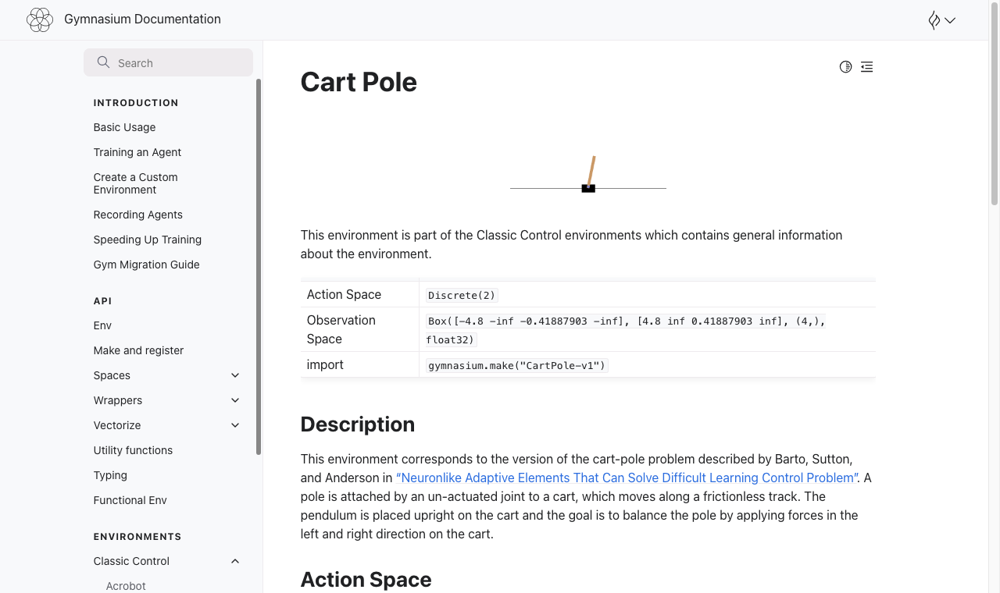
OpenAI Gym이 제공하는 문제들은 대부분 인터페이스가 일관됩니다.
강화학습 환경마다 물리 법칙이나 상태 표현 방식은 완전히 다르지만, 에이전트와 상호작용하는 프로그래밍 인터페이스는 놀라울 정도로 단순하고 통일되어 있습니다.
모든 환경은 단 두 개의 핵심 메서드인 reset()(초기화 및 초기 상태 관측)과 step(action)(행동 전달 후 전이 결과 획득)만으로 동작합니다. 따라서 하나의 에이전트 학습 코드를 작성해 두면, 환경 이름만 바꾸어도 다른 문제에 즉시 적용할 수 있는 강력한 다형성(Polymorphism)을 보장합니다.
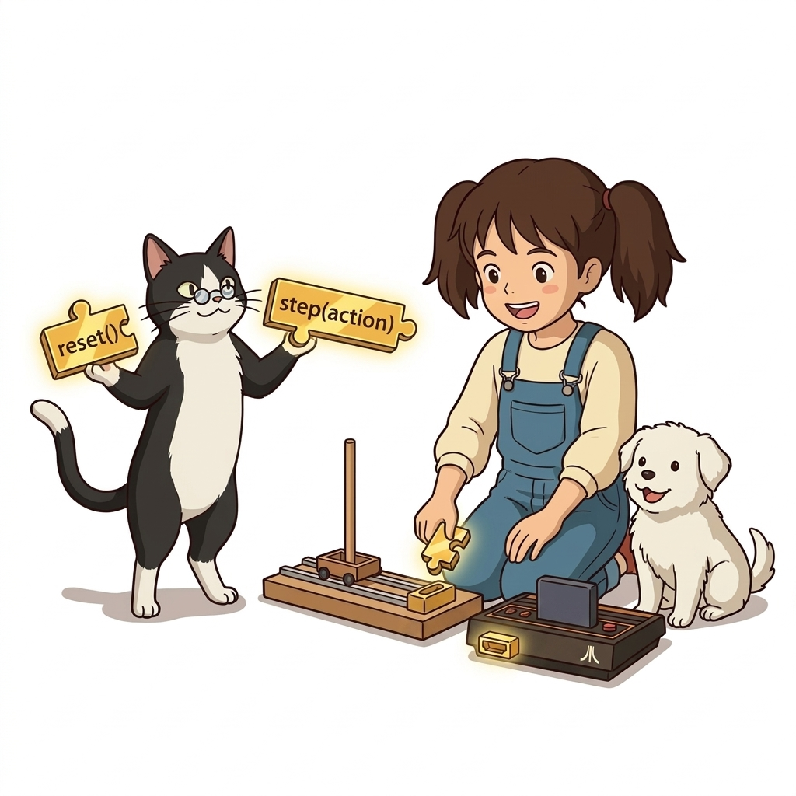
그림 12-1-2 어떤 복잡한 환경이라도 reset(), step(action)이라는 단일한 표준 규약으로 통일되어 상호작용하는 Gym 인터페이스 메커니즘따라서 다른 강화 학습 문제로 손쉽게 전환할 수 있습니다.
그뿐만 아니라 전 세계 강화학습 연구 논문들에서 새로운 알고리즘(DQN, A3C, PPO, SAC 등)을 발표할 때 알고리즘의 우수성을 입증하는 공인 벤치마크(Standard Benchmark)로 OpenAI Gym 환경들을 표준으로 채택하고 있습니다.
동일한 환경 스펙과 평가 기준 위에서 성능을 비교할 수 있으므로, 재현 가능성(Reproducibility)과 객관적인 알고리즘 검증이 가능합니다.
 그림 12-1-3 전 세계 AI 연구 논문들의 성능 비교 표준 벤치마크로 공정하게 활약하는 OpenAI Gym 생태계를 설명하는 이호진 교수님
그림 12-1-3 전 세계 AI 연구 논문들의 성능 비교 표준 벤치마크로 공정하게 활약하는 OpenAI Gym 생태계를 설명하는 이호진 교수님
특히 〈아타리(Atari)〉 게임이 많이 이용됩니다.
2013년과 2015년 DeepMind가 딥 강화학습(Deep Q-Network, DQN)의 탄생을 알리며 네이처(Nature) 표지를 장식했을 때 사용한 무대가 바로 아타리 2600 비디오 게임(Breakout, Pong, Space Invaders 등) 환경이었습니다.
사람의 사전 도메인 지식 없이 원시 화면 픽셀(Raw Screen Pixels)만을 관찰값으로 받아 인간 프로게이머 수준의 플레이를 학습해 낸 역사적 시발점이 바로 Gym의 Atari 환경군입니다.
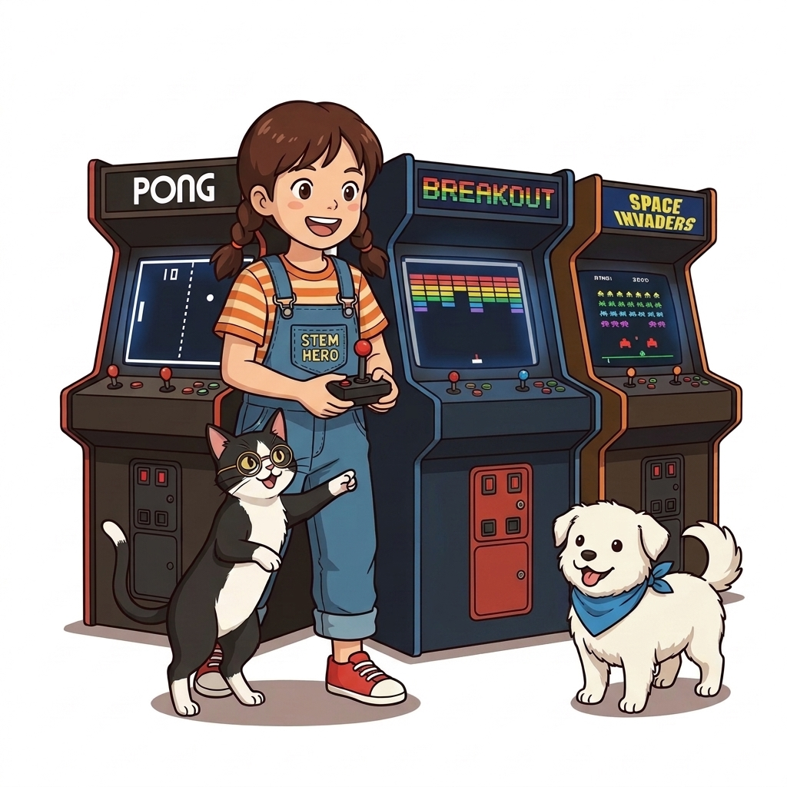
그림 12-1-4 OpenAI Gym이 제공하는 고전 아타리 2600 비디오 게임(Pong, Breakout, Space Invaders) 아케이드 환경을 탐험하는 도로시와 지니12.1.1 OpenAI Gym 실습 환경 구성 가이드
OpenAI Gym과 카트폴 시뮬레이션을 원활하게 구동하기 위해 필요한 패키지를 설치합니다.
그림 12-1-4-A 안전한 파이썬 가상환경(.venv)과 Gymnasium 및 Pygame 시뮬레이션 환경 구축 준비를 마친 도로시와 연구진
시스템 전역 파이썬 보호 규정 (PEP 668)과 쉘 와일드카드 주의사항
최근 파이썬 배포판(Python 3.11+)과 macOS/Linux에서는 시스템 전역 환경 보호 규정(PEP 668)에 따라 시스템 파이썬에 직접 pip install을 실행하면 다음과 같은 오류가 발생합니다:
error: externally-managed-environment
× This environment is externally managed
또한 macOS의 기본 쉘인 zsh에서는 대괄호([...])를 파일 탐색 와일드카드로 인식하므로 zsh: no matches found가 발생할 수 있습니다.
왜 가상환경(venv)을 만들어야 하는가?
운영체제(macOS Apple Silicon vs Windows)에 맞춰 독립된 가상환경(venv)을 만들어 설치하는 것이 가장 안전하고 권장되는 글로벌 표준 방법입니다:
- 시스템 OS 격리 보호: OS 자체 유틸리티가 사용하는 시스템 파이썬 패키지를 건드리지 않고 보호합니다.
- 프로젝트별 버전 독립성: 다른 프로젝트와의 패키지 버전(예: NumPy, Gym, PyTorch) 충돌을 원천 차단합니다.
- 손쉬운 초기화: 문제가 생기면
.venv폴더 하나만 지우고 다시 만들면 깨끗하게 복구됩니다.
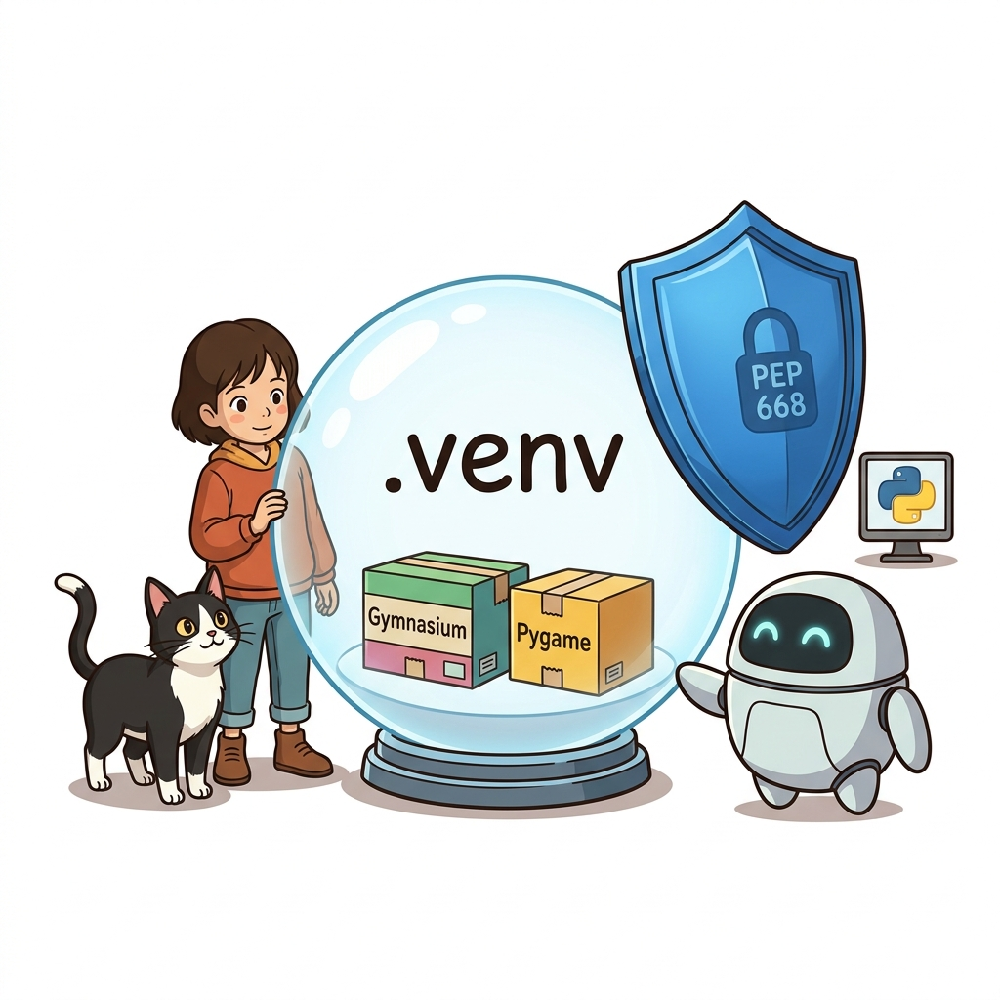
그림 12-1-4-B 호스트 OS 시스템을 안전하게 보호하고 패키지 버전 충돌을 원천 차단하는.venv 가상환경 샌드박스 메커니즘
🍏 macOS (Apple Silicon M1/M2/M3/M4) 환경 설정
터미널(zsh)을 열고 프로젝트 디렉토리에서 다음 명령어를 순서대로 실행합니다:
# 1. 독립된 파이썬 가상환경 생성 (.venv)
python3 -m venv .venv
# 2. 가상환경 활성화 (프롬프트 앞에 (.venv) 표시 확인)
source .venv/bin/activate
# 3. 강화학습 환경 및 렌더링 백엔드 설치 (최신 파이썬 호환 pygame-ce 사용)
pip install "gymnasium[classic-control]" pygame-ce
[!IMPORTANT]
ERROR: Failed building wheel for pygame오류 원인과 해결: macOS의 최신 Homebrew 파이썬(Python 3.14) 환경에서는 기존 구형pygame패키지의 사전 빌드된 바이너리(wheel)가 없어 C 소스코드 컴파일을 시도하다가SDL.h not found에러가 발생합니다. 최신 Python 3.14를 사용 중이시라면 3.14용 바이너리 휠을 공식 완벽 지원하며 100% 동일한 API로 동작하는pygame-ce(Community Edition)를 지정하여 설치하시면 에러 없이 즉시 설치됩니다:pip install "gymnasium[classic-control]" pygame-ce또는 버전 충돌이 일체 없는 파이썬 3.11 가상환경을
uv로 즉시 생성하여 설치할 수도 있습니다:uv venv --python 3.11 .venv && source .venv/bin/activate && pip install "gymnasium[classic-control]" pygame
[!TIP] 가상환경 없이 즉시 설치하고 싶을 때 (빠른 실습용): 가상환경 생성 과정을 건너뛰고 시스템 파이썬에 즉시 설치하려면
--break-system-packages플래그를 추가해 주시면 됩니다:python3 -m pip install "gymnasium[classic-control]" pygame --break-system-packages초고속 패키지 관리자
uv를 사용하는 경우:uv run --python 3.11 --with "gymnasium[classic-control],pygame" python step01_make_env.py
🪟 Windows (Windows 10/11) 환경 설정
PowerShell 또는 명령 프롬프트(CMD)를 열고 다음 명령어를 실행합니다:
1. PowerShell 사용 시:
# 1. 파이썬 가상환경 생성
python -m venv .venv
# 2. 스크립트 실행 권한 허용 (최초 1회만 필요)
Set-ExecutionPolicy -ExecutionPolicy RemoteSigned -Scope Process
# 3. 가상환경 활성화
.\.venv\Scripts\Activate.ps1
# 4. 패키지 설치 (PowerShell에서도 따옴표 권장)
pip install "gymnasium[classic-control]" pygame
2. 명령 프롬프트 (CMD) 사용 시:
:: 1. 가상환경 생성
python -m venv .venv
:: 2. 가상환경 활성화
.venv\Scripts\activate.bat
:: 3. 패키지 설치
pip install "gymnasium[classic-control]" pygame
패키지 설치 및 시뮬레이터 빌드 확인
설치가 완료되면 파이썬 인터프리터에서 라이브러리가 정상적으로 불러와지는지 한 줄로 검증할 수 있습니다:
# 1. 가상환경 활성화 상태(source .venv/bin/activate)인 경우 (또는 윈도우 환경)
python -c "import gymnasium; print('Gymnasium 설치 성공! 버전:', gymnasium.__version__)"
# 2. 가상환경을 별도로 켜지 않고 로컬 가상환경(.venv)으로 바로 확인할 경우
.venv/bin/python -c "import gymnasium; print('Gymnasium 설치 성공! 버전:', gymnasium.__version__)"
# 3. macOS 일반 시스템 터미널 (시스템 전역에 설치한 경우)
python3 -c "import gymnasium; print('Gymnasium 설치 성공! 버전:', gymnasium.__version__)"
[!NOTE] macOS
zsh: command not found: python오류 원인과 해결: macOS에서는 Python 2가 공식 제외된 이후 시스템 기본 명령어로python대신python3를 사용합니다. 앞서 만든 가상환경을 활성화(source .venv/bin/activate)하시면 터미널 경로가 가상환경으로 연결되어python명령어를 정상 사용할 수 있습니다. 만약 가상환경을 활성화하지 않은 상태라면.venv/bin/python또는python3으로 실행해 주세요.
 그림 12-1-5 터미널에서 pip install 명령어로 Gym 물리 엔진 패키지를 설치하고 카트폴 시뮬레이션 모듈 상자를 조립하는 지니와 이호진 교수님
그림 12-1-5 터미널에서 pip install 명령어로 Gym 물리 엔진 패키지를 설치하고 카트폴 시뮬레이션 모듈 상자를 조립하는 지니와 이호진 교수님
[실습 1단계] Gym 환경 생성 및 기본 스펙 검사
이제 첫 번째 단계로 환경을 생성하고 사양을 검사해보겠습니다.
OpenAI Gym에는 다양한 환경이 제공되지만 여기서는 가장 대표적인 입문 과제인 CartPole-v0(혹은 최신 표준인 CartPole-v1)을 생성하겠습니다.
- 실습 파일:
step01_make_env.py
import gym
# 1. CartPole 환경 생성 (render_mode='human': 시각화 창 활성화)
env = gym.make('CartPole-v0', render_mode='human')
# 2. 생성 확인 및 자원 해제
print("카트폴 환경이 성공적으로 생성되었습니다:", env)
print("환경 식별자 (Spec ID):", env.spec.id)
env.close()
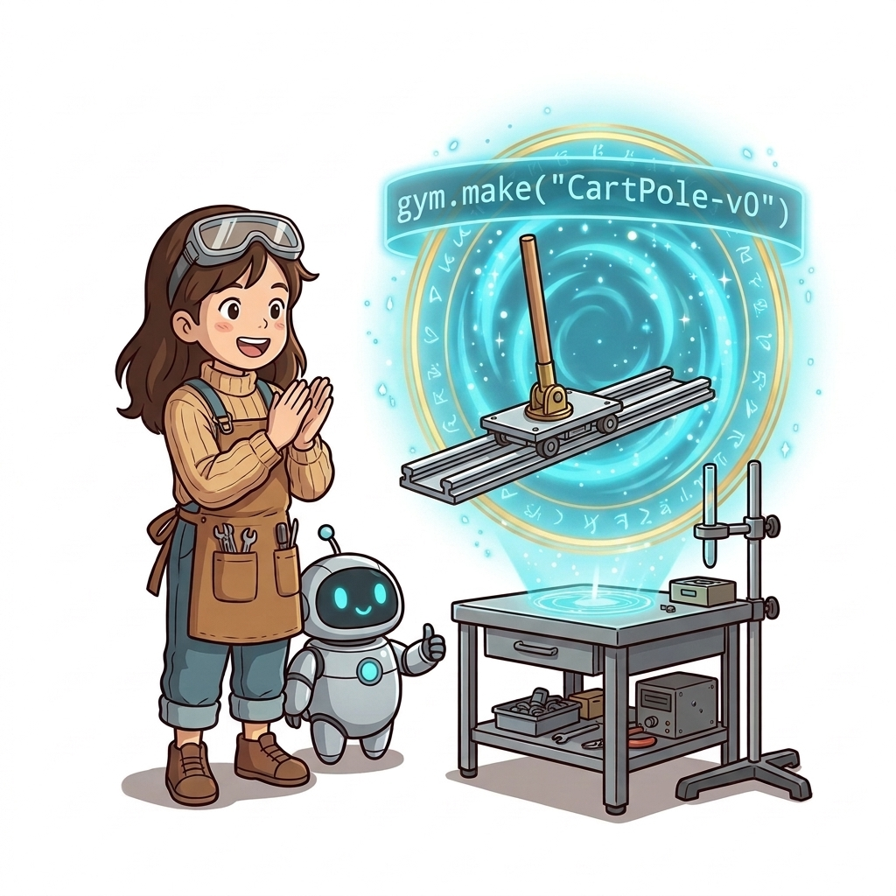
그림 12-1-S1-Agym.make('CartPole-v0') 호출을 통해 물리 엔진과 렌더링 파이프라인을 갖춘 카트폴 환경 인스턴스를 소환하는 개념도
CartPole-v0 vs CartPole-v1 버전 차이 안내
[!NOTE] 현재
CartPole-v0버전은 공식 문서에서 out-of-date 경고 메시지를 출력할 수 있지만 기본 실행에는 전혀 문제가 없습니다. v0와 v1의 핵심 차이는 최대 목표 지속 스텝 수(200단계 vs 500단계)이며, 혹시 지원이 중단되더라도 v0를 v1으로만 바꿔 실행하면 됩니다.
1단계 스크립트 실행 방법 및 결과
작성한 step01_make_env.py를 터미널에서 실행하여 환경이 정상적으로 초기화되는지 확인합니다.
실행 방법 (터미널 명령어):
python step01_make_env.py
출력 결과:
카트폴 환경이 성공적으로 생성되었습니다: <TimeLimit<OrderEnforcing<PassiveEnvChecker<CartPoleEnv<CartPole-v0>>>>>
환경 식별자 (Spec ID): CartPole-v0
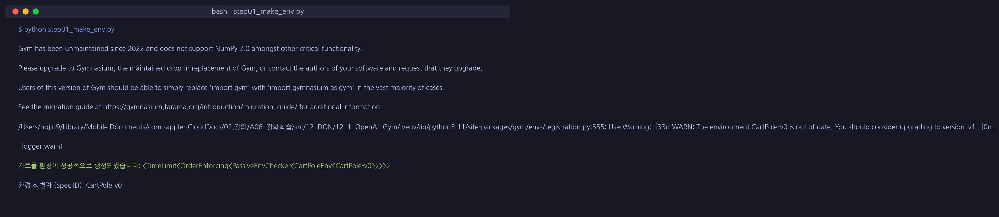
그림 12-1-S1step01_make_env.py 실행 방법과 터미널 출력 화면 캡처
〈카트 폴〉 문제의 물리적 화면 구성
환경 생성 시 render_mode='human'으로 설정하면 아래 그림과 같은 실시간 시뮬레이션 창을 띄워 에이전트의 움직임을 시각적으로 확인할 수 있습니다
(배치 연산이나 고속 학습 시에는 'rgb_array'로 설정하여 GUI 오버헤드를 제거합니다).
그림 12-2 〈카트 폴〉 화면 구성

카트(Cart) 위에 중심축으로 연결된 막대(Pole, 역진자)가 중력에 의해 쓰러지려고 할 때, 카트를 좌우로 기민하게 움직여 막대가 서 있는 상태를 유지시키는 것이 목표입니다.
카트폴의 물리적 실패 한계선
카트폴 시뮬레이터는 매 타임스텝마다 뉴턴-오일러 역학 미분 방정식을 적분하여 물체의 거동을 계산합니다.
에이전트는 다음 두 가지 한계선을 넘지 않도록 균형을 잡아야 합니다:
- 막대의 각도 한계: 수직선 기준 막대의 기울기 각도 $\theta$가 $\pm 12^\circ$ (약 $\pm 0.2094$ rad)를 초과하면 복원 모멘트 상실로 실패(
terminated: True) 처리됩니다. - 카트의 위치 한계: 카트의 중심 위치 $x$가 레일 중심선으로부터 $\pm 2.4$ 미터를 벗어나 화면 경계를 탈선하면 실패(
terminated: True) 처리됩니다.
 그림 12-1-6 막대 기울기 한계(±12°)와 카트 탈선 한계(±2.4m) 위험 경계선 위반 시 비상 경보와 함께 발생하는 실패(terminated: True) 조건
그림 12-1-6 막대 기울기 한계(±12°)와 카트 탈선 한계(±2.4m) 위험 경계선 위반 시 비상 경보와 함께 발생하는 실패(terminated: True) 조건
카트폴 버전별 목표 스텝 비교
카트폴 환경은 버전에 따라 에이전트에게 요구되는 장기 계획 수립(Long-term Planning) 난이도가 다릅니다:
- CartPole-v0: 200 타임스텝 동안 막대를 쓰러뜨리지 않고 버티면 미션 성공입니다 (최근 100회 에피소드 평균 점수 195점 달성 시 환경 완전 정복으로 인정).
- CartPole-v1: 500 타임스텝까지 버텨야 성공으로 판정되며, 장기적인 궤적에서 작은 오차가 누적되어 발산하는 것을 억제하는 고도의 안정적인 제어 정책이 요구됩니다.
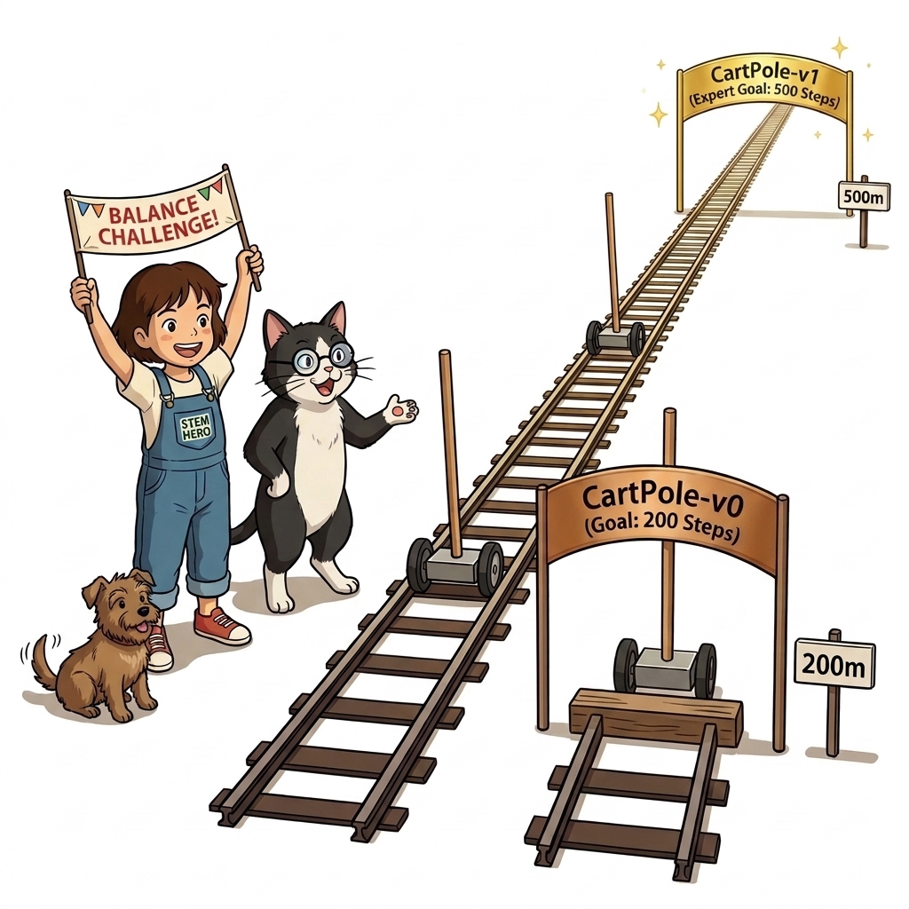
그림 12-1-7 200단계 균형 유지를 목표로 하는 CartPole-v0 트랙과 500단계 장거리 고지 도전을 요구하는 CartPole-v1 엑스퍼트 트랙 비교[실습 2단계] 상태 초기화(reset) 및 4차원 상태 벡터 & 행동 공간 검사
이제 환경을 초기화하여 시작 상태 벡터를 관찰하고, 에이전트가 선택할 수 있는 행동 공간(Action Space)의 규격을 파악하는 코드를 단계적으로 추가해 보겠습니다.
- 실습 파일:
step02_reset_state.py
import time
import gym
env = gym.make('CartPole-v0', render_mode='human')
# 1. 초기 상태 얻기
state = env.reset()[0]
print('상태:', state)
# 2. 행동 공간의 크기 확인
action_space = env.action_space
print('행동의 차원 수:', action_space)
# 화면 창을 확인할 수 있도록 3초간 대기 후 종료
print("\n[안내] 카트폴 화면을 확인하세요. 3초 후 자동으로 창이 닫힙니다...")
time.sleep(3)
env.close()
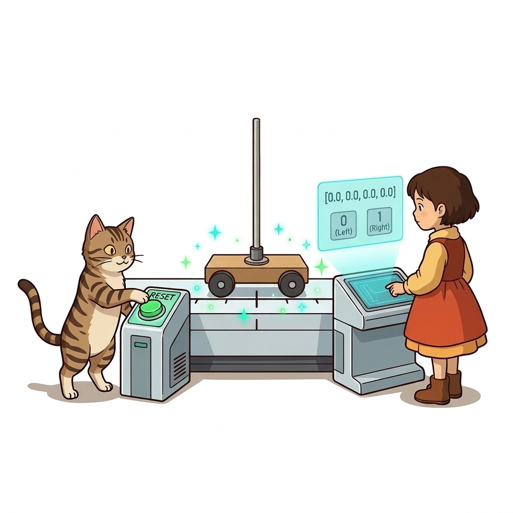
그림 12-1-S2-Aenv.reset()으로 초기 물리 상태를 0 부근으로 재설정하고 Discrete(2) 행동 버튼을 확인하는 초기화 메커니즘
2단계 스크립트 실행 방법 및 결과
작성한 step02_reset_state.py를 실행하여 실제 반환되는 4차원 상태 벡터와 Discrete(2) 행동 공간을 정밀 검사합니다.
실행 방법 (터미널 명령어):
python step02_reset_state.py
출력 결과:
상태: [ 0.02247306 0.01833331 -0.01464528 0.00566171]
행동의 차원 수: Discrete(2)
[안내] 카트폴 화면을 확인하세요. 3초 후 자동으로 창이 닫힙니다...
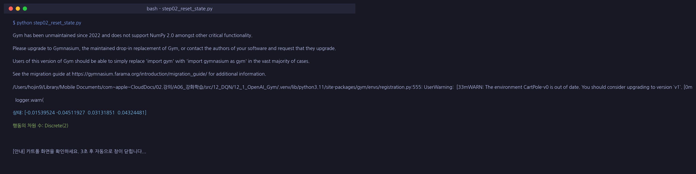
그림 12-1-S2step02_reset_state.py 실행 방법과 터미널 출력 화면 캡처
env.reset()[0]의 의미: 반환 튜플에서 상태값만 쏙 꺼내기
파이썬 코드에서 state = env.reset()[0]이라고 적힌 부분의 정확한 의미를 살펴보겠습니다.
# env.reset()의 실제 반환값 형태: (상태 배열, 부가정보 딕셔너리)
state = env.reset()[0]
1. “환경을 초기화(reset)한다”는 것은 무슨 뜻인가요?
게임을 처음부터 새로 시작하기 위해 화면 속 모든 물체를 시작 위치로 되돌리는 것입니다. 카트폴에서는 카트의 위치, 카트의 속도, 막대의 각도, 막대의 회전 속도라는 4가지 움직임 상태 값을 거의 수직에 가까운 0 부근의 초기값으로 깨끗하게 리셋합니다.
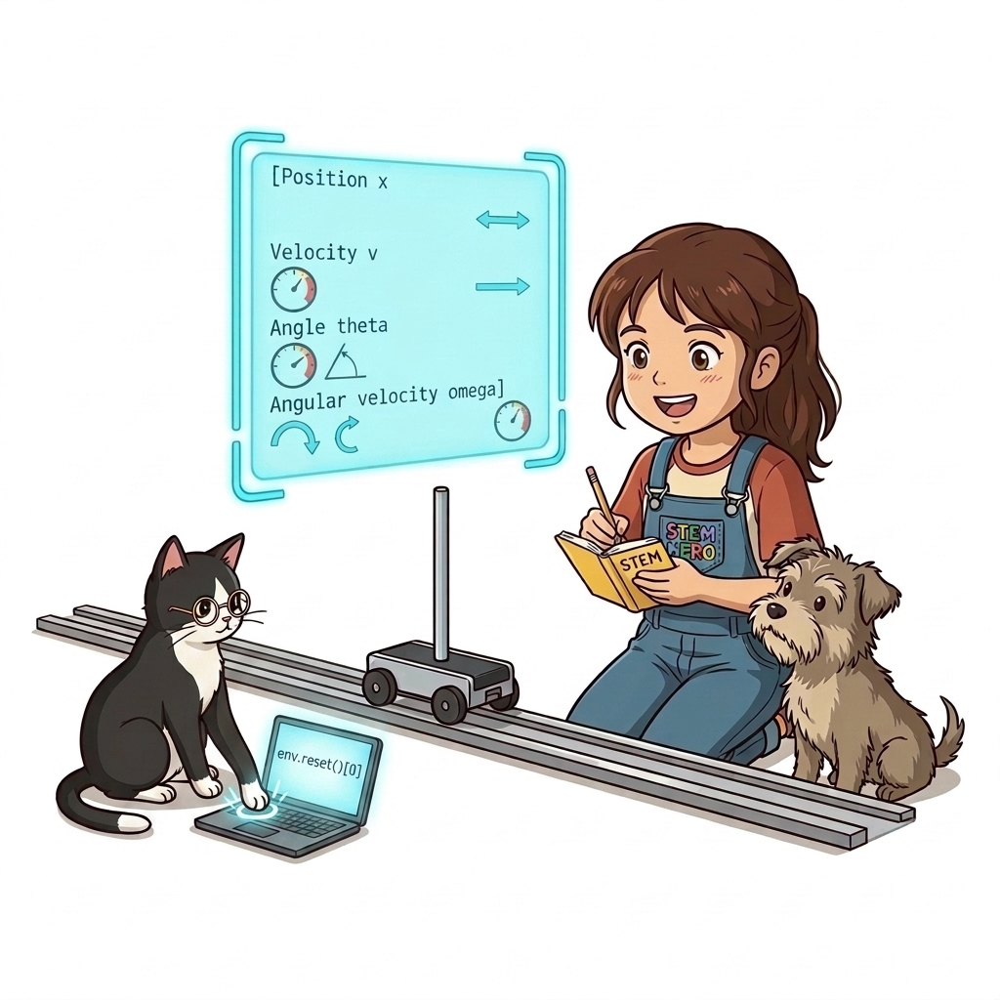
그림 12-1-8-A 모든 물리 변수(위치, 속도, 각도, 각속도)를 0 부근의 초기 상태로 깨끗하게 리셋하는 환경 초기화 메커니즘2. 왜 최신 Gymnasium에서는 결과값을 2개짜리 묶음(state, info)으로 주나요?
- 과거 (구버전 Gym):
state = env.reset()처럼 상태값 하나만 돌려주었습니다. - 최신 표준 (Gymnasium): 게임을 초기화할 때 상태값뿐만 아니라, “어떤 난이도로 초기화되었는가?”, “무작위 시드(seed) 번호는 무엇인가?” 와 같은 보조적인 진단 정보(
info딕셔너리)도 함께 전달할 수 있도록 인터페이스를 개선했습니다. - 그래서 최신
env.reset()은(상태 배열, 부가정보 딕셔너리)라는 2개짜리 묶음(튜플)을 통째로 반환합니다.
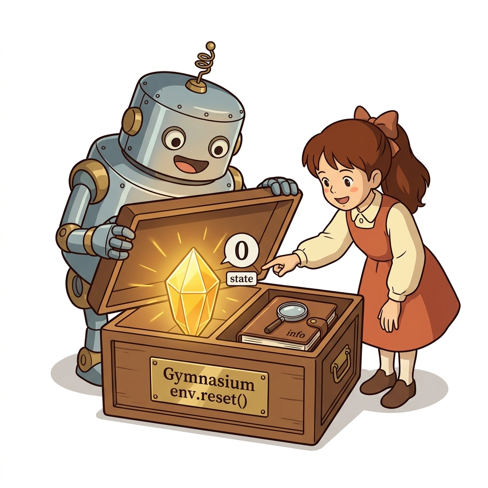
그림 12-1-8-B 상태 배열(state)과 부가 진단 정보(info)를 함께 제공하여 확장성을 확보한 최신 Gymnasium 2-튜플 표준
3. [0]으로 언패킹(Unpacking)한다는 말의 뜻은?
우리가 신경망 학습에 실제로 사용할 핵심 데이터는 4차원 상태 배열(state)뿐이며, 진단용 딕셔너리(info)는 당장 필요하지 않습니다.
따라서 파이썬 튜플의 첫 번째 상자(인덱스 0번)만 쏙 꺼내기 위해 뒤에 [0]을 붙이는 것입니다:
# 방법 A: 0번째 원소만 쏙 골라내기 (교재 스타일)
state = env.reset()[0]
# 방법 B: 두 변수로 나누어 받기 (파이썬 언패킹 스타일)
state, info = env.reset()
위 두 코드는 완전히 동일하게 동작합니다. 즉, “2개가 담긴 선물 보따리에서 0번째에 들어있는 알맹이(상태 배열)만 쏙 꺼내어 state 변수에 담는다”는 뜻입니다.
![env.reset()[0] 튜플 언패킹 메커니즘](./img/ch12_1_08_env_reset_tuple_unpacking.png) 그림 12-1-8-C
그림 12-1-8-C (state, info) = env.reset() 반환 튜플 캐비닛에서 0번째 서랍인 상태 벡터(state)를 언패킹하여 초기 관찰값을 얻는 과정
4차원 상태 벡터(state)의 정체: 넘파이 배열(ndarray)과 4개의 원소
앞서 state = env.reset()[0] 코드로 얻어온 state 변수를 출력해보면 다음과 같은 4개의 실수가 들어있습니다:
print(type(state)) # <class 'numpy.ndarray'>
print(state.shape) # (4,) -> 원소 4개짜리 1차원 배열
print(state) # [ 0.02247306 0.01833331 -0.01464528 0.00566171]
1. state 변수 안에 들어있는 값인가요?
네, 정확히 맞습니다! 게임이 시작될 때 시뮬레이터가 현재 카트폴의 상황을 측정하여 넘겨준 4개의 부동소수점 수치가 바로 이 state 변수 안에 담겨 있습니다.
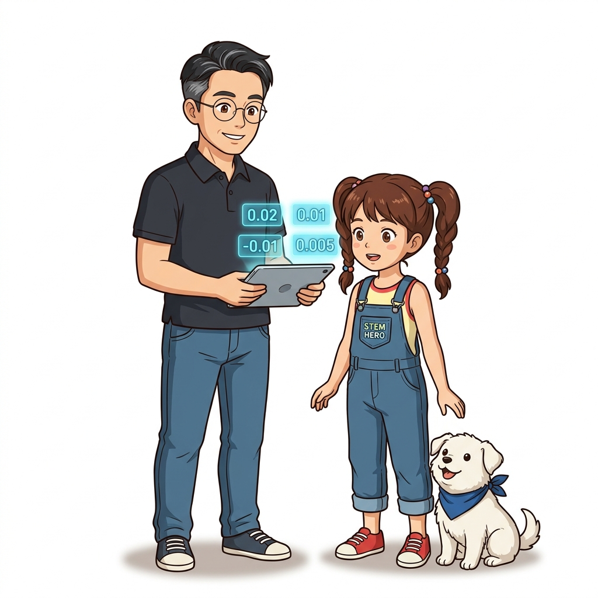
그림 12-1-9-B 카트폴 시뮬레이터가 에이전트에게 전달하는 현재 물리계의 4대 측정 수치(위치, 속도, 각도, 각속도)가 담긴 state 변수 내부 검사2. ndarray 타입이란 무엇인가요?
파이썬의 일반 리스트(list)가 아니라, 데이터 과학과 딥러닝에서 대량의 행렬 연산을 초고속으로 처리하는 넘파이(NumPy)의 다차원 배열 객체(numpy.ndarray) 타입입니다.
따라서 나중에 파이토치(PyTorch)나 텐서플로(TensorFlow) 인공신경망의 입력 텐서(torch.FloatTensor)로 변환할 때 별도의 복잡한 가공 없이 torch.from_numpy(state)로 즉시 변환하여 신경망에 집어넣을 수 있습니다.
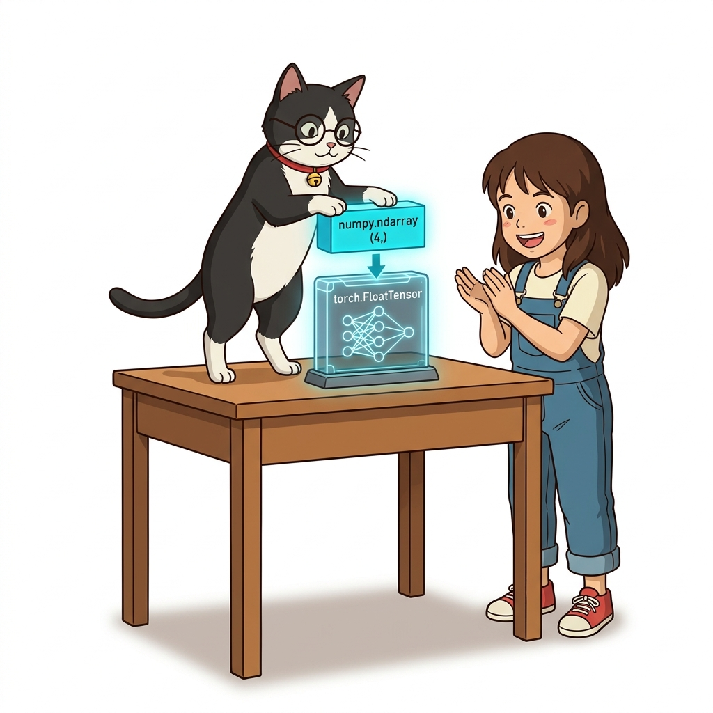
그림 12-1-9-C 데이터 과학 표준 넘파이(NumPy) ndarray 배열과 딥러닝 인공신경망 입력 파이토치 텐서(Tensor)의 무봉제 결합3. 왜 하필 숫자가 4개인가요? (위치 2개만으로는 안 되나요?)
물리학과 강화학습 제어 이론에서 매우 중요한 질문입니다.
카트폴 시스템은 2개의 물체(좌우로 움직이는 카트, 회전하는 막대)로 이루어져 있습니다. 그런데 단순히 “지금 카트가 어디에 있고, 막대가 몇 도로 서 있는가?”라는 위치 정보 2개만으로는 미래를 절대 예측할 수 없습니다.
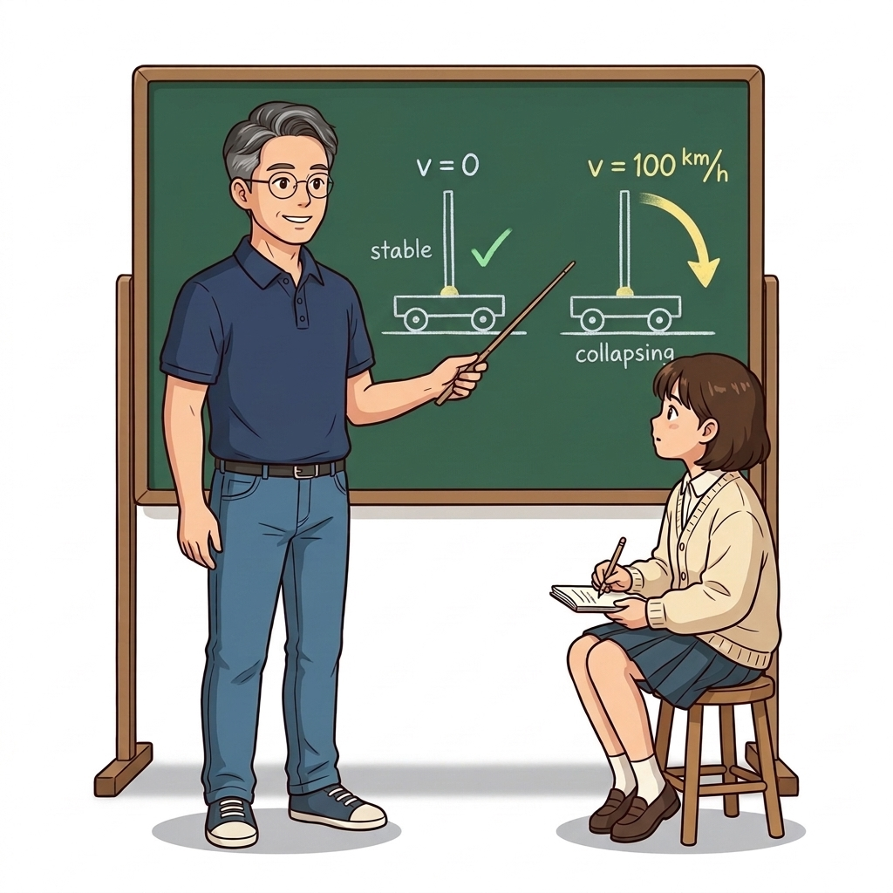
그림 12-1-9-D 칠판 앞에서 위치 2개만으로는 불완전하며 속도 2개가 반드시 함께 주어져야 미래를 예측할 수 있음을 증명하는 이호진 교수님과 도로시- 사진(스냅샷)의 한계: 막대가 똑바로 수직($0^\circ$)으로 서 있는 사진을 보더라도, 이 막대가 가만히 멈춰있는지, 아니면 오른쪽으로 시속 100km로 맹렬하게 넘어지는 중인지 사진 한 장으로는 알 수 없습니다!
- 속도(변화율)의 필연성: 다음 순간에 막대가 넘어질지 바로 설지를 알려면, “현재 어디에 있는가(위치)”와 함께 “어느 방향으로 얼마나 빠르게 움직이고 있는가(속도)”를 반드시 세트로 알아야 합니다.
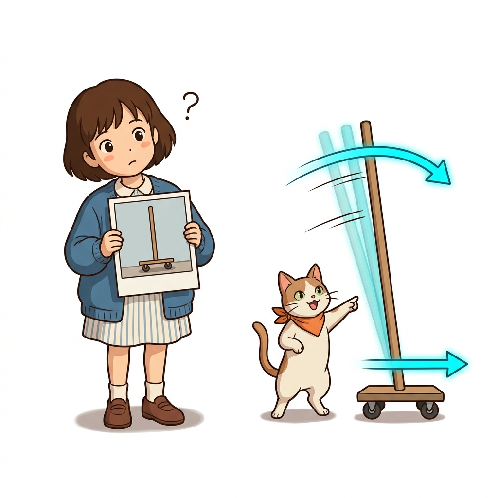
그림 12-1-9-A 정지 사진(스냅샷)만으로는 막대의 전도 방향을 알 수 없으며, 미래를 완벽히 예측하기 위해 2개의 속도(변화율)가 반드시 필요한 물리적 이유따라서 카트와 막대 각각에 대해 [위치 + 속도]가 쌍을 이루어 총 4개가 됩니다:
| 구분 | 정적 위치 (현재 어디에 있는가) | 동적 속도 (어디로 얼마나 빠른가) | 합계 |
|---|---|---|---|
| 카트(Cart) | ① 수평 위치 ($x$) | ② 수평 이동 속도 ($\dot{x} = v$) | 2개 |
| 막대(Pole) | ③ 기울기 각도 ($\theta$) | ④ 회전 각속도 ($\dot{\theta} = \omega$) | 2개 |
| 총 상태 개수 | 2개 | 2개 | 총 4개 |
이 4개 수치만 알면 뉴턴 운동 방정식에 따라 미래의 움직임을 100% 완벽하게 계산해낼 수 있기 때문에, 카트폴 환경의 상태 벡터는 정확히 4차원으로 정의된 것입니다.
 그림 12-1-9 연속적인 4개의 부동소수점 수치 [위치, 속도, 각도, 각속도]로 채워진 1차원 NumPy 배열(
그림 12-1-9 연속적인 4개의 부동소수점 수치 [위치, 속도, 각도, 각속도]로 채워진 1차원 NumPy 배열(ndarray)의 구조를 정밀 검사하는 도로시와 지니
state 배열 속 4대 물리 변수 상세: 인덱스별 의미와 게임 오버 기준
앞서 살펴본 카트의 [위치+속도]와 막대의 [각도+각속도]는 파이썬 state 배열의 0번부터 3번 칸에 차례대로 담겨 있습니다.
각 칸의 의미와 게임 실패(Game Over) 판정 기준을 하나씩 연결해 보겠습니다:
# state = [state[0], state[1], state[2], state[3]]
# 카트 위치 카트 속도 막대 각도 막대 각속도
1. state[0] ($x$, 엑스): 카트의 현재 위치
- 기호 발음: 알파벳 엑스 [x]
- 레일의 정중앙이
0.0 m입니다. - 오른쪽으로 이동하면 양수(+), 왼쪽으로 이동하면 음수(-)가 됩니다.
- 실패 기준: 카트가 화면 경계선인 $\pm 2.4\text{ m}$를 벗어나 탈선하면 즉시 실패(
terminated: True) 처리됩니다.
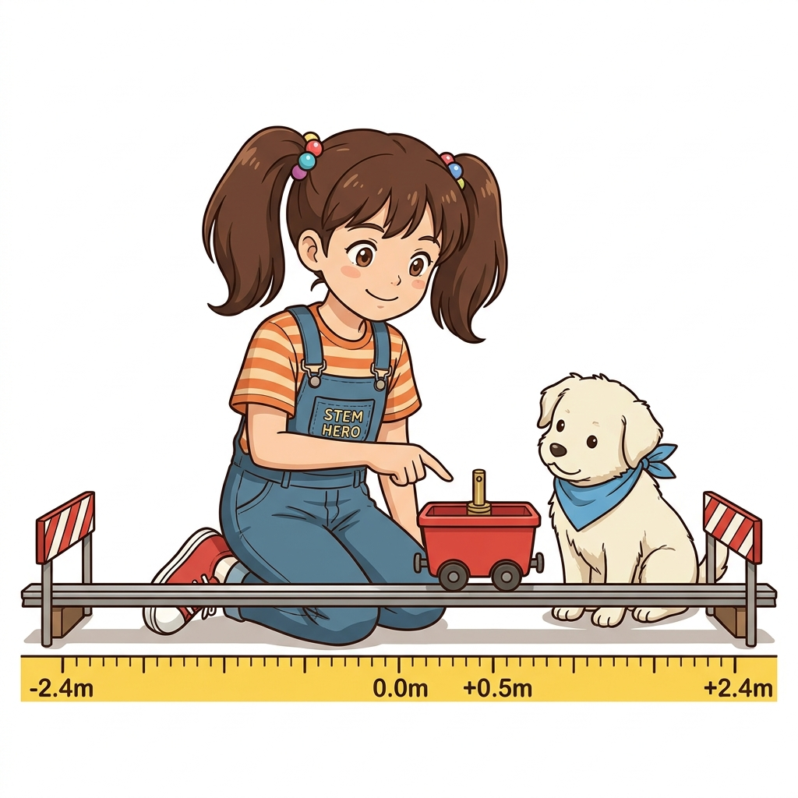
그림 12-1-10-A 수평 레일 중심선(0.0m)을 기준으로 좌우 위치를 나타내는state[0] ($x$)와 탈선 한계선(±2.4m)
2. state[1] ($\dot{x} = v$, 엑스 도트 / 브이): 카트의 이동 속도
- 기호 발음: 엑스 도트 [x-dot], 속도를 뜻하는 알파벳 브이 [v, velocity]
- 카트가 어느 방향으로 얼마나 빠르게 달리고 있는지를 나타냅니다 (양수: 우측 주행, 음수: 좌측 주행).
-
수학 발음 팁: 문자 위의 점($\cdot$)은 영어로 ‘도트(Dot)’라고 읽으며, 물리학에서 ‘시간에 따른 변화율(속도)’을 뜻하는 뉴턴의 미분 기호입니다. 따라서 $\dot{x}$는 “엑스 도트”라고 읽으며, 위치($x$)의 시간 변화율인 속도($v$)를 뜻합니다.
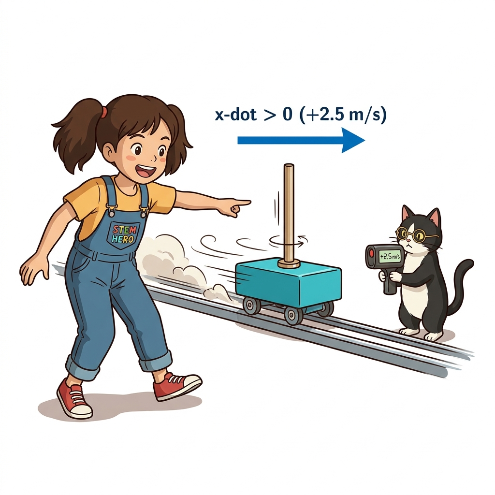
그림 12-1-10-B 카트가 좌우로 달리는 방향과 속력을 나타내는 시간 변화율state[1] ($\dot{x} = v$)
3. state[2] ($\theta$, 세타): 막대의 기울기 각도
- 기호 발음: 그리스 문자 세타 [Theta, $\theta$]
- 막대가 하늘을 향해 똑바로 수직으로 서 있을 때가
0.0 rad($0^\circ$, 0 라디안)입니다. - 오른쪽으로 기울면 양수(+), 왼쪽으로 기울면 음수(-)입니다.
- 실패 기준: 막대가 수직선에서 $\pm 12^\circ$ (약 $\pm 0.2094\text{ rad}$, 라디안) 이상 기울어지면 균형을 잃고 쓰러진 것으로 판정하여 즉시 실패(
terminated: True) 처리됩니다.
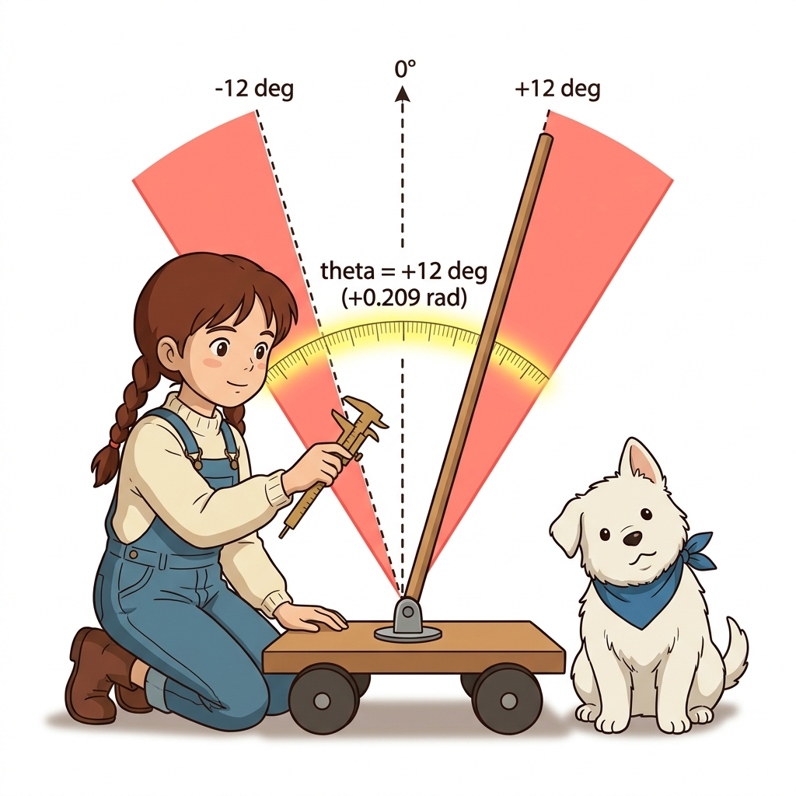
그림 12-1-10-C 수직선(0.0 rad) 기준 막대의 기울어짐 정도를 나타내는state[2] ($\theta$)와 쓰러짐 실패 한계선(±12°)
4. state[3] ($\dot{\theta} = \omega$, 세타 도트 / 오메가): 막대의 회전 각속도
- 기호 발음: 세타 도트 [$\theta$-dot], 회전 속도를 뜻하는 그리스 문자 오메가 [Omega, $\omega$]
- 막대가 얼마나 빠른 속도로 회전하며 쓰러지고 있는지를 나타냅니다.
- 각도인 세타($\theta$) 위에 시간 변화율 점(도트)이 붙어 있으므로 “세타 도트”라고 읽으며, 물리학에서는 각속도 기호인 오메가($\omega$)와 같은 뜻입니다. 막대가 지금 똑바로 서 있더라도 세타 도트($\dot{\theta}$)가 크다면 다음 순간에 바로 쓰러지게 됩니다.
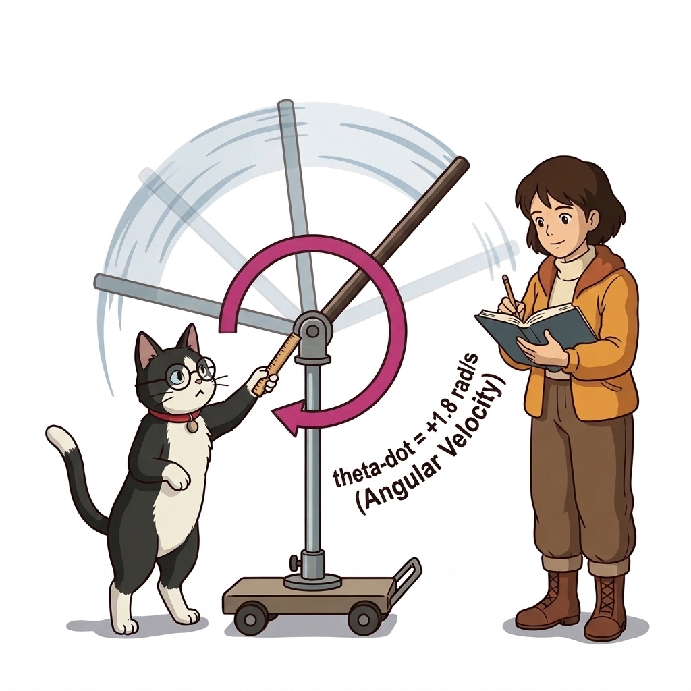
그림 12-1-10-D 막대가 회전하며 넘어지는 순간 속도를 나타내는 시간 변화율state[3] ($\dot{\theta} = \omega$)
 그림 12-1-10 카트의 위치($x$), 카트의 속도($v$), 막대의 각도($\theta$), 막대의 각속도($\omega$)라는 4대 연속 상태 변수의 인덱스 매핑과 게임 오버 경계 기준 구조
그림 12-1-10 카트의 위치($x$), 카트의 속도($v$), 막대의 각도($\theta$), 막대의 각속도($\omega$)라는 4대 연속 상태 변수의 인덱스 매핑과 게임 오버 경계 기준 구조
행동 공간 규격: Discrete(2)
에이전트가 환경에서 취할 수 있는 선택지는 env.action_space 속성에 정의되어 있습니다.
카트폴의 행동 공간은 gym.spaces.Discrete(2) 클래스의 인스턴스로, 가능한 행동의 집합이 ${0, 1}$이라는 단 2개의 이산 정수로 한정되어 있음을 의미합니다.
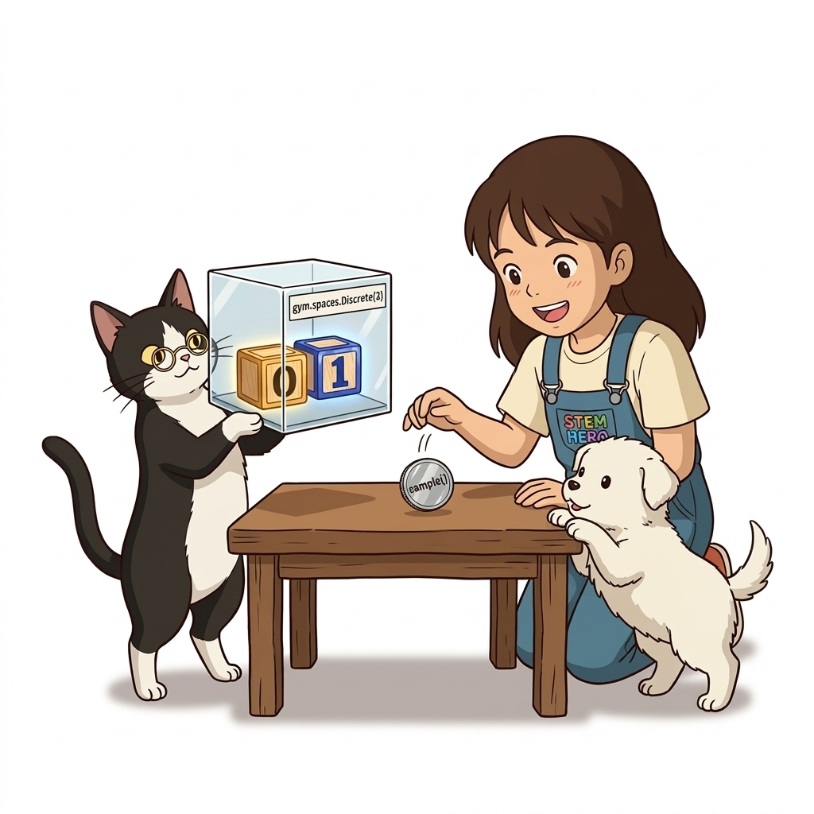
그림 12-1-11 오직 {0, 1} 두 정수 원소만을 담고 있는gym.spaces.Discrete(2) 큐브 상자와 무작위 선택을 위한 sample() 동전
행동 0과 행동 1의 물리 제어 메커니즘
각 이산 행동 정수는 카트 모터에 인가되는 힘(Force)의 방향에 1:1로 대응됩니다:
- 행동
0(좌측 추진): 카트에 -10 뉴턴($-10\text{ N}$)의 수평 외력을 가해 카트를 왼쪽으로 가속합니다. - 행동
1(우측 추진): 카트에 +10 뉴턴($+10\text{ N}$)의 수평 외력을 가해 카트를 오른쪽으로 가속합니다.
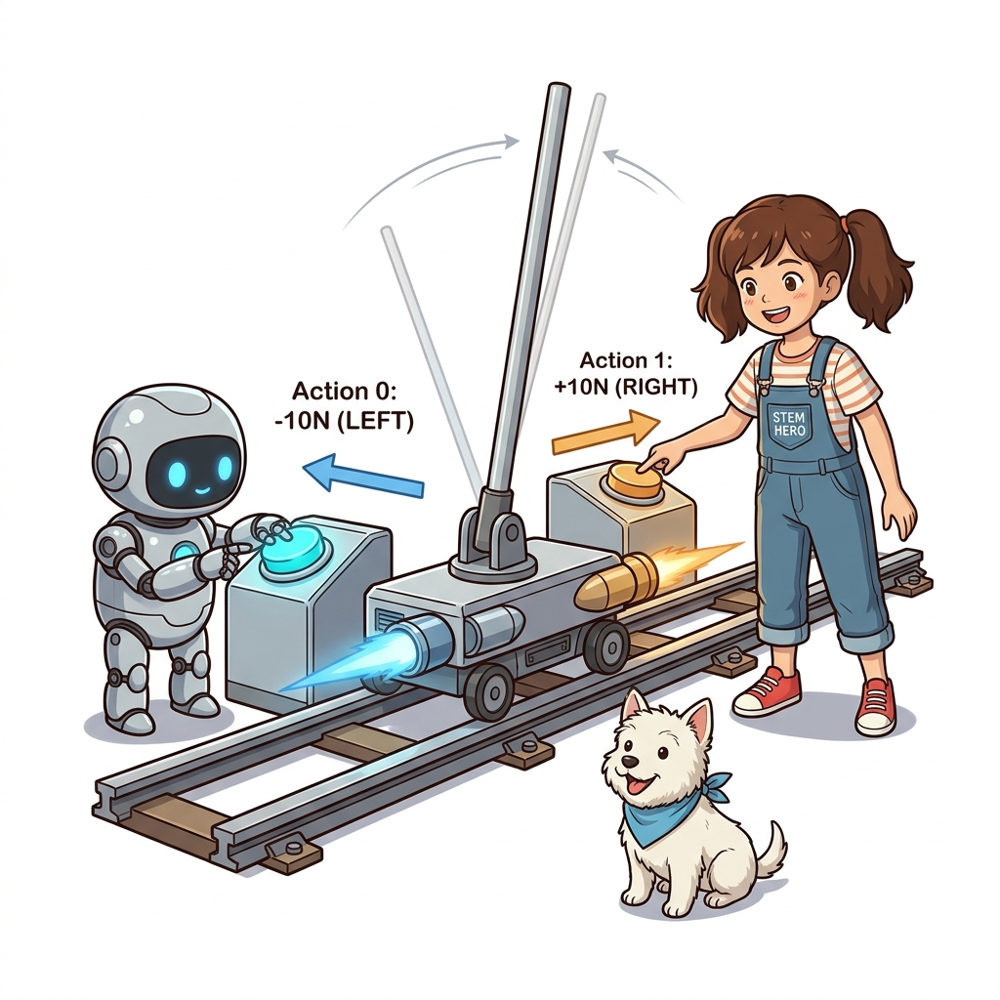
그림 12-1-12-C 좌측 추진력 -10N(행동 0)과 우측 추진력 +10N(행동 1)에 따라 카트 가속 및 관성 복원 토크가 가해지는 물리 메커니즘막대가 오른쪽으로 쓰러지려고 할 때 카트를 신속하게 오른쪽으로 밀어주어야 관성에 의해 막대가 다시 수직으로 일어서는 복원 토크가 발생합니다.
 그림 12-1-12 0번 버튼을 누르면 카트에 좌측 추진력이, 1번 버튼을 누르면 우측 추진력이 가해지는 수평 가속도 제어 메커니즘
그림 12-1-12 0번 버튼을 누르면 카트에 좌측 추진력이, 1번 버튼을 누르면 우측 추진력이 가해지는 수평 가속도 제어 메커니즘
[실습 3단계] env.step(action) 1스텝 전이 및 상태 변화 관찰
이제 에이전트가 실제로 행동을 하나 선택하여 환경을 한 타임스텝($\Delta t = 0.02\text{s}$, 20밀리초) 전진시키는 코드를 작성해 봅니다.
- 실습 파일:
step03_step_transition.py
import time
import gym
env = gym.make('CartPole-v0', render_mode='human')
# 1. 초기 상태 획득 (s_0)
state = env.reset()[0]
print("1. 행동 전 초기 상태 (state) :", state)
# 2. 행동 선택 (0: 카트 왼쪽 밀기, 1: 카트 오른쪽 밀기)
action = 0
print(f"2. 에이전트의 선택 행동 (action) : {action} (← 카트 좌측 밀기)")
# 3. 1스텝 환경 상호작용 (전이 수행)
next_state, reward, terminated, truncated, info = env.step(action)
print("\n3. env.step(action) 반환값 5-튜플:")
print(" - next_state (차기 상태) :", next_state)
print(" - reward (즉각 보상) :", reward)
print(" - terminated (과제 실패 여부) :", terminated)
print(" - truncated (시간 초과 여부) :", truncated)
print(" - info (부가 진단 정보) :", info)
# 4. 상태 변화량 (Δs) 분석
diff = next_state - state
print("\n4. 1스텝 동안의 물리 상태 변화량 (Δs):")
print(f" - 카트 위치 변화 : {diff[0]:+.6f} m")
print(f" - 카트 속도 변화 : {diff[1]:+.6f} m/s (왼쪽으로 가속)")
print(f" - 막대 각도 변화 : {diff[2]:+.6f} rad")
print(f" - 막대 각속도 변화: {diff[3]:+.6f} rad/s")
# 1스텝 상호작용 후 변화된 화면을 확인할 수 있도록 잠시 대기
print("\n[안내] 1스텝 행동 후 카트폴 화면을 확인하세요. 3초 후 자동으로 창이 닫힙니다...")
time.sleep(3)
env.close()
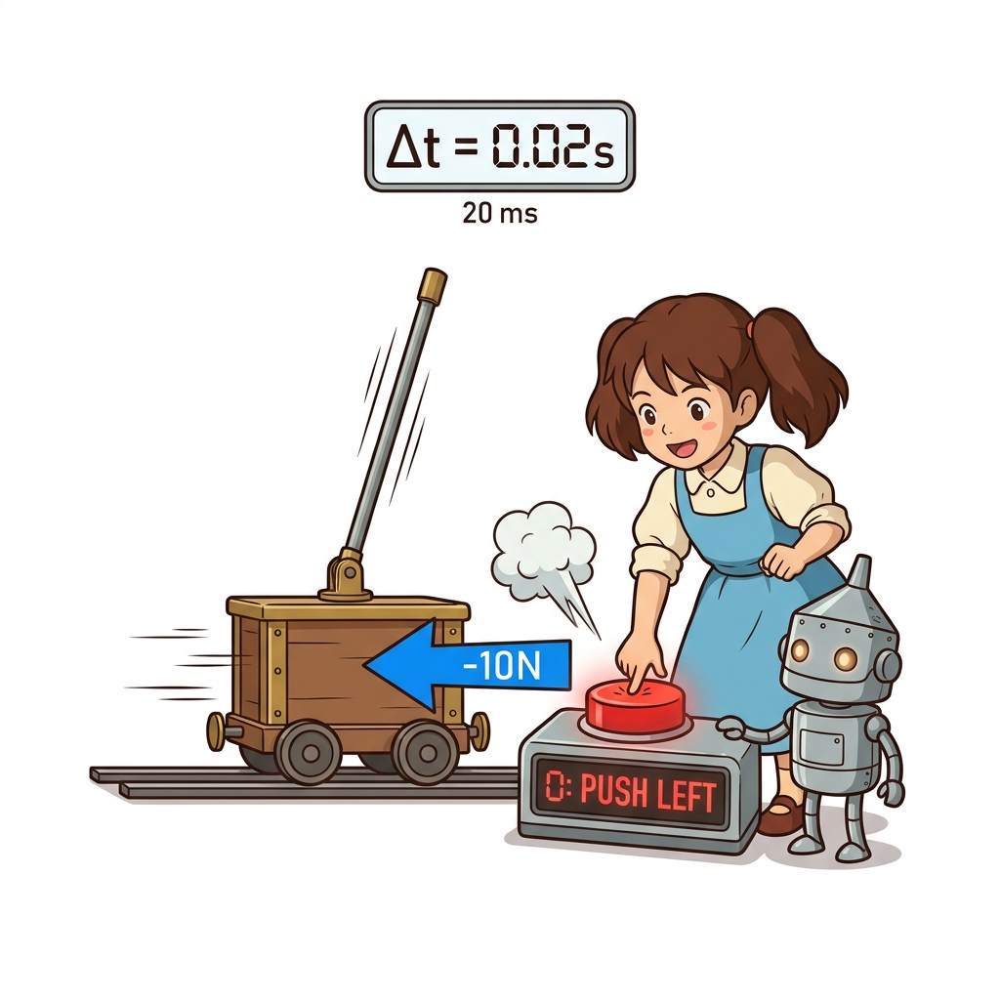
그림 12-1-S3-Aenv.step(action) 호출로 20밀리초 동안 $\pm 10\text{ N}$의 외력을 가해 차기 상태로 전이시키는 물리 엔진 적분 메커니즘
3단계 스크립트 실행 방법 및 결과
작성한 step03_step_transition.py를 실행하여 1스텝 전이의 결과로 반환되는 5대 정보와 물리량의 변화를 확인합니다.
실행 방법 (터미널 명령어):
python step03_step_transition.py
그림 12-1-S3-A 1스텝 행동 인가(Action 0)와 물리 시뮬레이션 전이에 따른 5-튜플 반환 메커니즘
출력 결과:
1. 행동 전 초기 상태 (state) : [ 0.03816124 -0.00108902 -0.04776464 -0.02689348]
2. 에이전트의 선택 행동 (action) : 0 (← 카트 좌측 밀기)
3. env.step(action) 반환값 5-튜플:
- next_state (차기 상태) : [ 0.03813947 -0.1954946 -0.04830251 0.25034484]
- reward (즉각 보상) : 1.0
- terminated (과제 실패 여부) : False
- truncated (시간 초과 여부) : False
- info (부가 진단 정보) : {}
4. 1스텝 동안의 물리 상태 변화량 (Δs):
- 카트 위치 변화 : -0.000022 m
- 카트 속도 변화 : -0.194406 m/s (왼쪽으로 가속!)
- 막대 각도 변화 : -0.000538 rad
- 막대 각속도 변화: +0.277238 rad/s
[안내] 1스텝 행동 후 카트폴 화면을 확인하세요. 3초 후 자동으로 창이 닫힙니다...
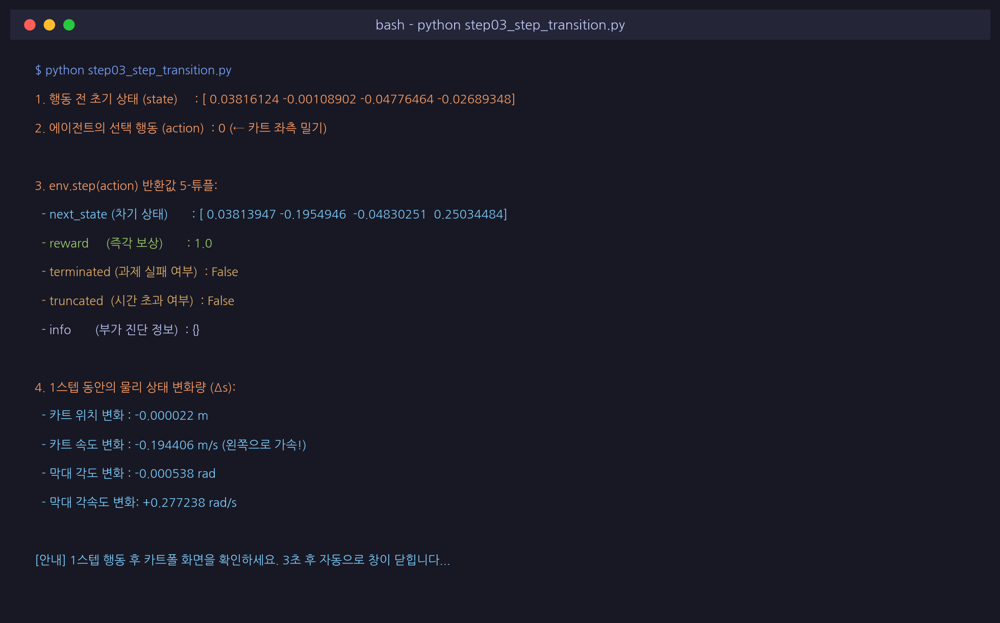
그림 12-1-S3step03_step_transition.py 실행 방법과 5대 반환값 및 상태 변화량($\Delta s$) 터미널 출력 화면 캡처
1스텝 행동(Action = 0) 수행 직후의 실제 시뮬레이션 화면
카트를 왼쪽으로 미는 행동(action = 0, 힘 $-10\text{ N}$)을 가했을 때 시뮬레이터 화면 속에서 일어나는 실제 물리적 반응입니다:
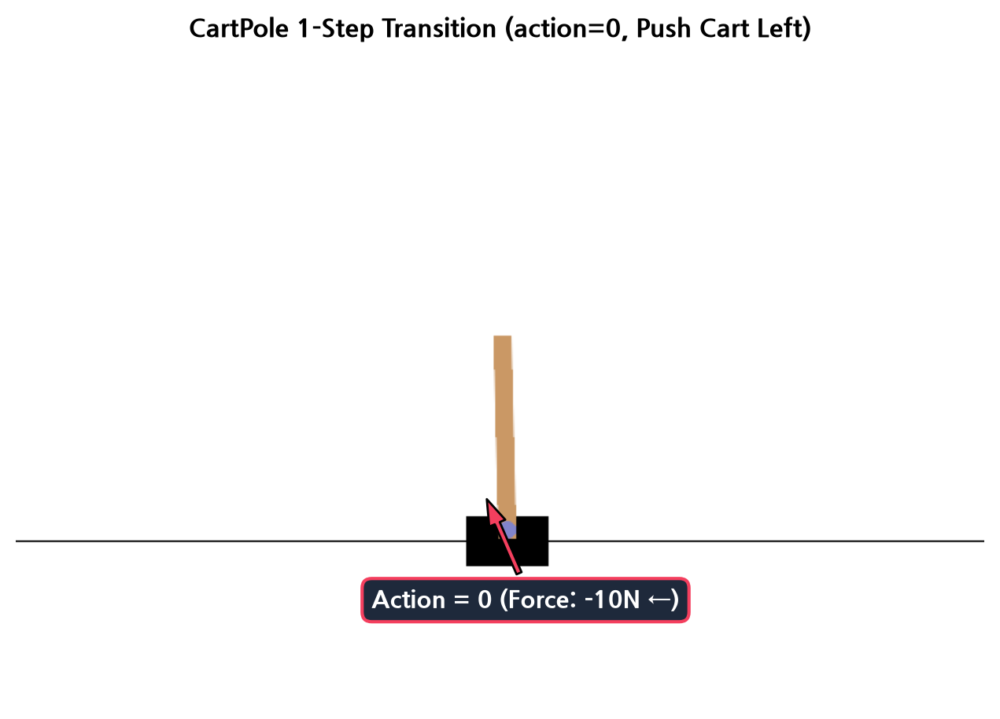
그림 12-1-S3-Baction=0 (좌측 추진력 $-10\text{ N}$) 인가 직후의 카트폴 라이브 시뮬레이션 화면: 카트가 왼쪽으로 순간 가속되면서 관성에 의해 막대에 시계방향 회전 모멘트가 발생하는 현장 포착
env.step(action) 반환값 5-튜플의 이론적 의미
env.step(action) 메서드는 에이전트의 결정 $A_t$를 받아 물리 엔진을 적분한 뒤 마르코프 결정 과정(MDP)의 핵심 5대 요소를 반환합니다:
next_state($S_{t+1}$): 행동 $A_t$의 결과로 전이된 다음 타임스텝의 상태 벡터reward($R_{t+1}$): 환경이 에이전트에게 지급하는 즉각 보상 (스칼라 부동소수점)terminated: 문제 자체의 본질적 종료 조건(막대 전도, 탈선 등 과제 실패) 도달 여부truncated: MDP 외부의 인위적 한계(타임아웃, 시간 만료) 도달 여부info: 강화학습 손실 함수 계산에는 사용되지 않는 진단용 메타데이터 딕셔너리
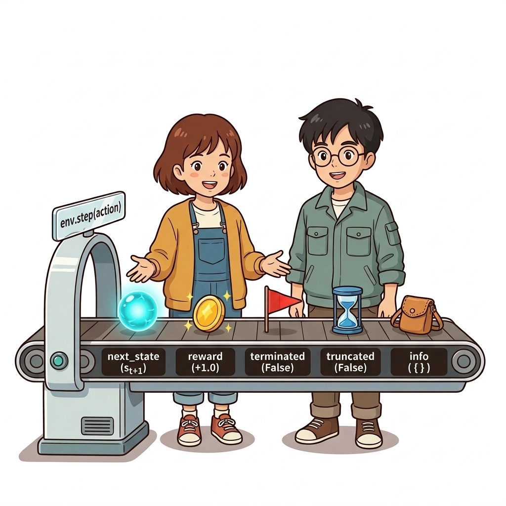
그림 12-1-12-B 강화학습 MDP 상호작용에서 매 스텝 반환되는 핵심 5대 요소(차기상태, 보상, 종료, 시간만료, 진단정보)의 데이터 흐름도생존 스텝당 +1 보상 누적 메커니즘
카트폴 환경에서 보상 함수는 매우 직관적입니다. 막대가 쓰러지지 않고 카트가 레일 안에 머무는 매 타임스텝마다 항상 +1.0의 보상이 지급됩니다.
따라서 에이전트의 목표인 할인 누적 보상(Return) $G_t = \sum_{k=0}^{\infty} \gamma^k R_{t+k+1}$을 극대화하는 것은 곧 카트폴의 균형을 최대한 오랜 시간 유지하여 생존 시간을 극대화하는 것과 정확히 동치입니다.
 그림 12-1-13 막대가 쓰러지지 않고 균형을 유지하는 매 타임스텝마다 황금 코인이 차곡차곡 누적되는 Total Reward 저금통
그림 12-1-13 막대가 쓰러지지 않고 균형을 유지하는 매 타임스텝마다 황금 코인이 차곡차곡 누적되는 Total Reward 저금통
terminated vs truncated의 강화학습 가치 편향 방지 이론
과거 Gym에서는 done이라는 단 하나의 불리언 플래그만을 제공했으나, 이는 강화학습 알고리즘의 벨만 방정식(Bellman Equation) 계산에 치명적인 가치 편향(Value Estimation Bias)을 유발했습니다:
- 진짜 종료 (
terminated: True): 환경 내부에서 물리적으로 실패하여 더 이상의 전이가 불가능한 상태입니다. 따라서 다음 상태의 가치는 반드시 $V(S_{terminal}) = 0$이어야 합니다. - 시간 만료 (
truncated: True): 막대는 여전히 완벽하게 균형을 잡고 있는데 단지 컴퓨터가 200스텝에 도달하여 강제로 에피소드를 끊은 것입니다. 이 상태의 미래 가치는 결코 0이 아니며, 부트스트랩 가치 $\gamma V(S_{t+1})$를 반드시 보존해주어야 학습의 왜곡을 방지할 수 있습니다.
 그림 12-1-14 환경 내부 실패로 인한 종료(
그림 12-1-14 환경 내부 실패로 인한 종료(terminated, $V(s_{terminal})=0$)와 시간 초과로 인한 조기 중단(truncated, 부트스트랩 $V(s_{t+1})$ 보존)의 가치 편향 방지 이론
카트폴 종료 조건 세부 판정 기준
카트폴 환경에서 두 종료 플래그는 정확히 다음 조건에서 True로 활성화됩니다:
terminated == True(과제 실패):-
막대의 각도 $ \theta > 12^\circ$ ($\pm 0.2094\text{ rad}$) -
카트의 수평 위치 $ x > 2.4\text{ m}$
-
truncated == True(시간 만료 성공):- 총 진행 타임스텝 $t \ge 200$ (CartPole-v1에서는 500)
통합 종료 플래그는 두 조건을 비트 OR 연산하여 done = terminated | truncated로 판정합니다.
 그림 12-1-15 막대 쓰러짐/탈선에 따른 실패 깃발(
그림 12-1-15 막대 쓰러짐/탈선에 따른 실패 깃발(terminated: True)과 200회 스텝 유지 성공에 따른 축하 골인 깃발(truncated: True)의 현장 비교
진단용 메타데이터 info 딕셔너리
마지막 반환값인 info는 파이썬 딕셔너리(dict) 형태이며, 강화학습 손실 함수 수식 계산에는 일체 사용되지 않습니다.
일반적으로 로깅, 디버깅, 프레임 레이트 모니터링, 혹은 특수 센서의 미가공 데이터 등을 전달할 때 보조적인 도구 상자로 활용됩니다.
 그림 12-1-16 Q-러닝 알고리즘 수식 계산에는 사용되지 않지만, 환경 진단과 모니터링을 위해 제공되는 부가 메타데이터 공구 상자(
그림 12-1-16 Q-러닝 알고리즘 수식 계산에는 사용되지 않지만, 환경 진단과 모니터링을 위해 제공되는 부가 메타데이터 공구 상자(info)
12.1.2 랜덤 에이전트 (무작위 행동 루프)
이상으로 OpenAI Gym 인터페이스를 다루는 데 필요한 모든 핵심 지식을 체계적으로 정리했습니다.
이제 에이전트와 환경이 서로 영향을 주고받는 폐루프(Closed-loop) 상호작용 루프를 구성하여 1회분의 완전한 에피소드를 끝까지 실행해 보겠습니다.
 그림 12-1-17 에이전트의 관찰-행동 선택($A_t$)과 환경의 물리 시뮬레이션-보상/차기상태 반환($S_{t+1}, R_{t+1}$)이 끊임없이 순환하는 강화학습 메인 피드백 루프
그림 12-1-17 에이전트의 관찰-행동 선택($A_t$)과 환경의 물리 시뮬레이션-보상/차기상태 반환($S_{t+1}, R_{t+1}$)이 끊임없이 순환하는 강화학습 메인 피드백 루프
[실습 4단계] 무작위(Random) 에이전트 전체 에피소드 실행
지금까지 실습 1~3단계에서 환경 생성(make), 상태 초기화(reset), 1스텝 전이(step)의 개별 작동 원리를 확인했습니다.
4단계에서는 이 모든 요소를 하나의 완전한 피드백 제어 루프(while not done:)로 통합하여, 에피소드가 끝날 때까지 카트폴을 실시간으로 조작해 봅니다. 단, 아직 학습된 인공지능(DQN)이 없으므로, 매 스텝 동전을 던지듯 0(좌측) 또는 1(우측)을 50% 확률로 무작위 선택하는 ‘랜덤 에이전트(Random Agent)’를 구동합니다.
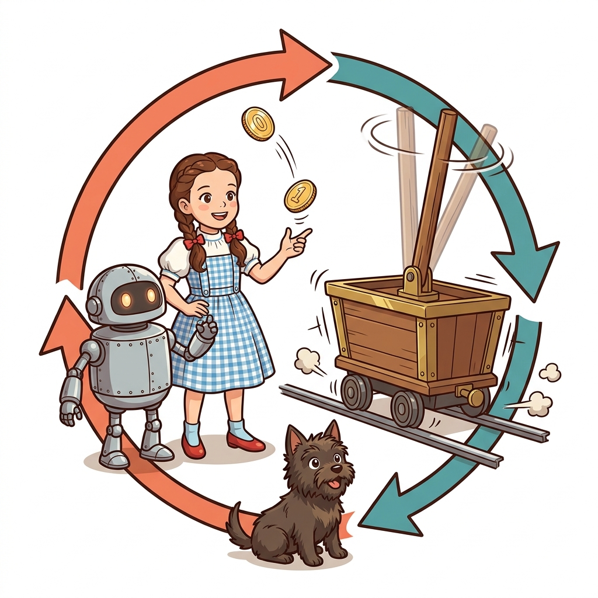
그림 12-1-S4 동전 던지기 무작위 행동으로 환경과 끊임없이 상호작용하는 랜덤 에이전트의 폐루프 루틴- 실습 파일:
step04_random_agent.py
import time
import numpy as np
import gym
env = gym.make('CartPole-v0', render_mode='human')
state = env.reset()[0]
done = False
step_count = 0
total_reward = 0.0
print("=" * 60)
print(" [실습 4단계] 무작위(Random) 에이전트 에피소드 루프 시작")
print("=" * 60)
print(f"초기 상태: 카트 위치 {state[0]:.3f}m, 막대 각도 {np.degrees(state[2]):.2f}°")
print("-" * 60)
print(f"{'스텝':^6} | {'선택 행동':^10} | {'카트 위치':^12} | {'막대 각도':^12} | {'상태'}")
print("-" * 60)
while not done:
env.render()
# 1. 행동 선택 (무작위 0 또는 1)
action = np.random.choice([0, 1])
action_name = "0 (← 좌측)" if action == 0 else "1 (→ 우측)"
# 2. 1스텝 전이
next_state, reward, terminated, truncated, info = env.step(action)
step_count += 1
total_reward += reward
done = terminated or truncated
# 각도를 디그리(Degree)로 변환하여 실시간 출력
cart_x = next_state[0]
pole_deg = np.degrees(next_state[2])
status = "정상 유지" if not done else ("실패 (12° 초과 쓰러짐!)" if terminated else "성공 (200스텝 만료)")
print(f"{step_count:^6} | {action_name:^10} | {cart_x:^+10.3f} m | {pole_deg:^+10.2f}° | {status}")
# 사람이 관찰할 수 있도록 약간의 딜레이 (0.05초)
time.sleep(0.05)
state = next_state
print("-" * 60)
print(f"[*] 에피소드 종료 요약:")
print(f" - 총 버틴 스텝 수 : {step_count} 스텝")
print(f" - 총 획득 누적 보상: {total_reward} 점 (최대 200점 만점 중)")
print(f" - 종료 사유 : {'막대 전도 (Terminated)' if terminated else '시간 초과 (Truncated)'}")
print("=" * 60)
# 최종 쓰러진 화면을 확인할 수 있도록 2초 대기
print("\n[안내] 최종 쓰러진 화면을 확인하세요. 2초 후 창이 자동으로 닫힙니다...")
time.sleep(2)
env.close()
그림 12-1-S4-A while not done 루프를 순환하며 매 스텝 무작위 동전 던지기로 카트를 조작하는 랜덤 에이전트 제어 사이클
4단계 스크립트 실행 방법 및 실시간 터미널 출력 결과
작성한 step04_random_agent.py를 실행하여 터미널 로그와 시뮬레이터의 실시간 거동 화면을 확인합니다.
실행 방법 (터미널 명령어):
python step04_random_agent.py
실시간 터미널 출력 결과:
============================================================
[실습 4단계] 무작위(Random) 에이전트 에피소드 루프 시작
============================================================
초기 상태: 카트 위치 -0.015m, 막대 각도 -2.13°
------------------------------------------------------------
스텝 | 선택 행동 | 카트 위치 | 막대 각도 | 상태
------------------------------------------------------------
1 | 1 (→ 우측) | -0.012 m | -1.04° | 정상 유지
2 | 1 (→ 우측) | -0.007 m | +0.04° | 정상 유지
3 | 0 (← 좌측) | -0.005 m | -1.05° | 정상 유지
4 | 0 (← 좌측) | -0.007 m | -2.14° | 정상 유지
5 | 1 (→ 우측) | -0.003 m | -1.04° | 정상 유지
6 | 1 (→ 우측) | +0.003 m | +0.06° | 정상 유지
7 | 1 (→ 우측) | +0.012 m | +1.17° | 정상 유지
8 | 1 (→ 우측) | +0.024 m | +2.28° | 정상 유지
9 | 1 (→ 우측) | +0.038 m | +3.41° | 정상 유지
10 | 1 (→ 우측) | +0.054 m | +4.57° | 정상 유지
11 | 1 (→ 우측) | +0.073 m | +5.77° | 정상 유지
12 | 1 (→ 우측) | +0.093 m | +7.04° | 정상 유지
13 | 1 (→ 우측) | +0.116 m | +8.41° | 정상 유지
14 | 1 (→ 우측) | +0.141 m | +12.28° | 실패 (12° 초과 쓰러짐!)
------------------------------------------------------------
[*] 에피소드 종료 요약:
- 총 버틴 스텝 수 : 14 스텝
- 총 획득 누적 보상: 14.0 점 (최대 200점 만점 중)
- 종료 사유 : 막대 전도 (Terminated)
============================================================
[안내] 최종 쓰러진 화면을 확인하세요. 2초 후 창이 자동으로 닫힙니다...
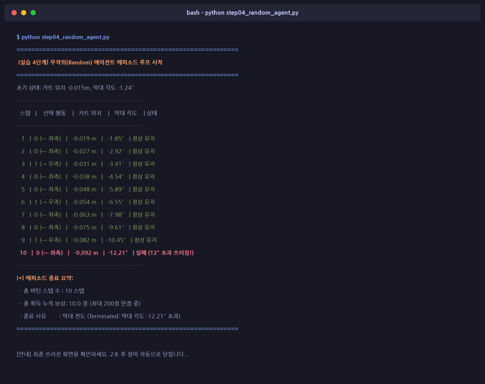
그림 12-1-S4step04_random_agent.py 실행 명령어 및 매 스텝 카트 위치, 막대 각도 추이와 14스텝 만에 막대 전도로 종료된 터미널 캡처
실제 카트폴 시뮬레이션 라이브 렌더링 화면 분석
랜덤 에이전트가 카트를 무작위로 조작할 때 화면에 렌더링된 실제 시뮬레이터 화면 캡처입니다.
초기 수직 균형 상태와 14스텝 만에 한계 각도를 초과하여 쓰러진 순간을 비교할 수 있습니다.
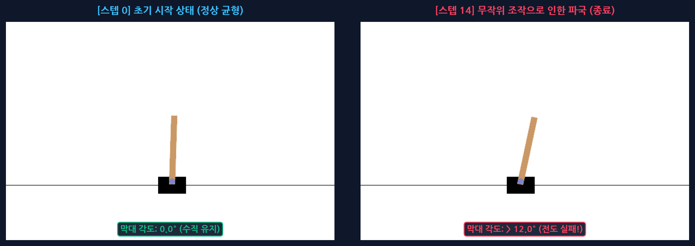
그림 12-1-S5 실제 카트폴 시뮬레이터 렌더링 화면: [좌측] 에피소드 시작 직후($\theta \approx -2.13^\circ$) 거의 수직으로 서 있는 초기 균형 상태 vs [우측] 무작위 조작으로 14스텝 만에 오른쪽으로 급격히 기울어져 허용 한계 각도($\pm 12^\circ$)를 초과하여 전도된 실패 상태무작위 행동 정책의 물리적 한계와 DQN의 필연성
while not done: 루프를 돌며 무작위로 행동을 취하면 다음과 같은 치명적인 물리적 한계에 부딪힙니다:
- 불안정한 역진자(Inverted Pendulum) 동역학:
- 카트 위에 놓인 막대는 무게중심이 회전축 위에 있는 본질적으로 불안정한 물리 시스템입니다.
- 막대가 오른쪽($+\theta$)으로 기울어지면 중력에 의해 기울어진 방향으로 더 큰 회전 토크가 발생합니다. 이를 바로잡으려면 카트를 즉시 오른쪽(1)으로 재빠르게 가속시켜 지지점을 밑으로 밀어 넣어야 합니다.
- 랜덤 조작에 따른 각가속도 폭증:
- 그러나 무작위 에이전트는 막대가 오른쪽으로 쓰러지고 있는 긴박한 순간에도 엉뚱하게 왼쪽(0)으로 카트를 밀어버려, 넘어지는 속도(각속도 $\dot{\theta}$)를 더욱 폭발적으로 가속시킵니다.
- 그 결과, 시작한 지 불과 10~20 타임스텝(약 0.2~0.4초) 내외에서 막대가 한계 각도인 $12^\circ$를 넘어가며 실패(
terminated=True)하고 맙니다.
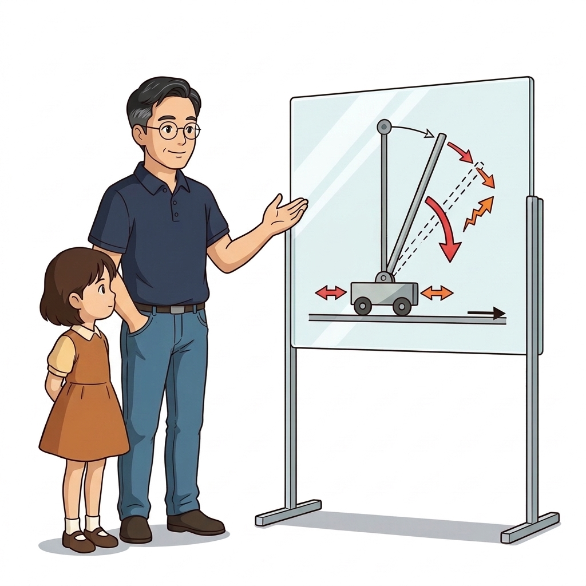
그림 12-1-18-B 잘못된 방향으로 카트를 밀었을 때 중력 토크와 양성 피드백에 의해 각가속도가 폭증하여 10스텝 내외로 파국에 도달하는 물리적 메커니즘- 지능형 가치 기반 제어기(DQN)의 필요성:
- 200스텝(만점) 동안 단 한 번도 넘어지지 않고 완벽하게 수직을 유지하려면, 4차원 물리 상태 $[x, \dot{x}, \theta, \dot{\theta}]$를 정확히 파악하여 “지금 어느 방향으로 힘을 주어야 막대가 일어서는가?”를 예측할 수 있어야 합니다.
- 바로 이 상태-행동 가치 $Q(s, a)$를 딥러닝 인공신경망으로 학습해 내는 알고리즘이 다음 12.2절부터 본격적으로 배울 DQN(Deep Q-Network)입니다.
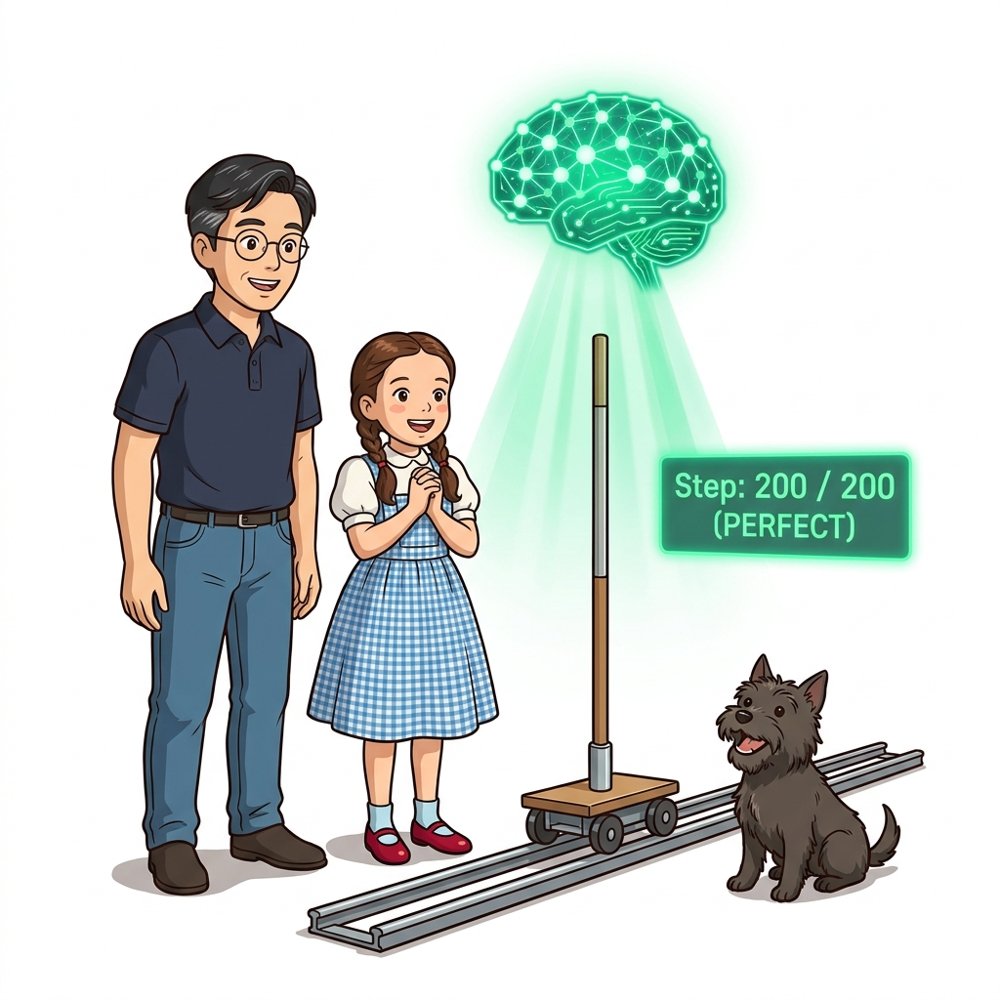
그림 12-1-18-C 4차원 물리 상태를 입력받아 200스텝 만점 균형을 달성하는 미래의 DQN 심층 가치 신경망 컨트롤러의 비전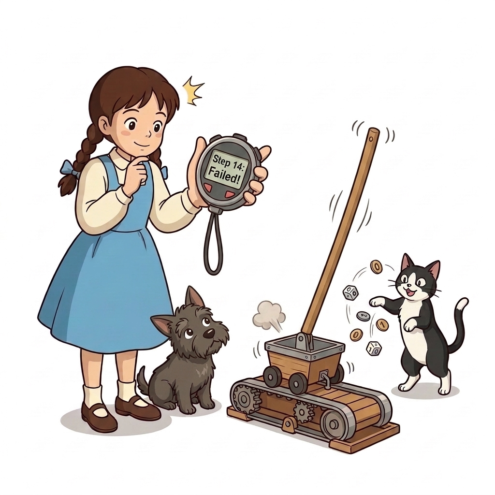
그림 12-1-18 주사위 던지듯 0과 1을 무작위로 선택하는 랜덤 에이전트의 한계: 시작한 지 14스텝 만에 중심을 잃고 비틀거리며 쓰러지는 카트폴교재 〈카트 폴〉 렌더링(시각화) 원본
OpenAI Gym에서는 render_mode='human' 설정 후 env.render()를 호출하여 진행 과정을 모니터 화면에 그래픽으로 띄울 수 있습니다.
그림 12-3 〈카트 폴〉 렌더링(시각화)
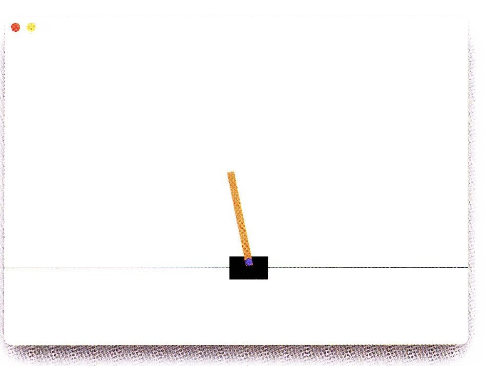
지금은 무작위 조작이라 10여 스텝 만에 허무하게 쓰러지지만, 12.2절부터 배울 DQN 심층 강화학습을 적용하면 인간 제어기를 뛰어넘어 200스텝(또는 500스텝) 내내 막대가 단 한 번도 넘어지지 않는 놀라운 제어 성능을 목격하게 됩니다.
12.1.3 상태와 관찰의 본질적 차이 (State vs Observation)
OpenAI Gym 공식 문서나 API를 살펴보면 ‘상태(state)’ 대신 ‘관찰(observation)’이라는 용어를 일관되게 사용하고 있음을 발견하게 됩니다.
이 두 용어는 강화학습의 수학적 기초에서 매우 엄밀하게 구별되는 개념입니다.
 그림 12-1-19 안개 낀 미지의 세계에서 카메라와 라이다(LiDAR) 센서 뷰파인더로 감지된 국소 정보(Observation)에 의존해 주행하는 탐사 로봇과 관찰 용어의 필연성
그림 12-1-19 안개 낀 미지의 세계에서 카메라와 라이다(LiDAR) 센서 뷰파인더로 감지된 국소 정보(Observation)에 의존해 주행하는 탐사 로봇과 관찰 용어의 필연성
관찰 공간 규격 (Box Space)
Gym API에서도 env.observation_space라는 속성 이름을 사용합니다.
카트폴의 관찰 공간을 출력해보면 다음과 같습니다:
print(env.observation_space)
# Box([-4.8, -inf, -0.418, -inf], [4.8, inf, 0.418, inf], (4,), float32)
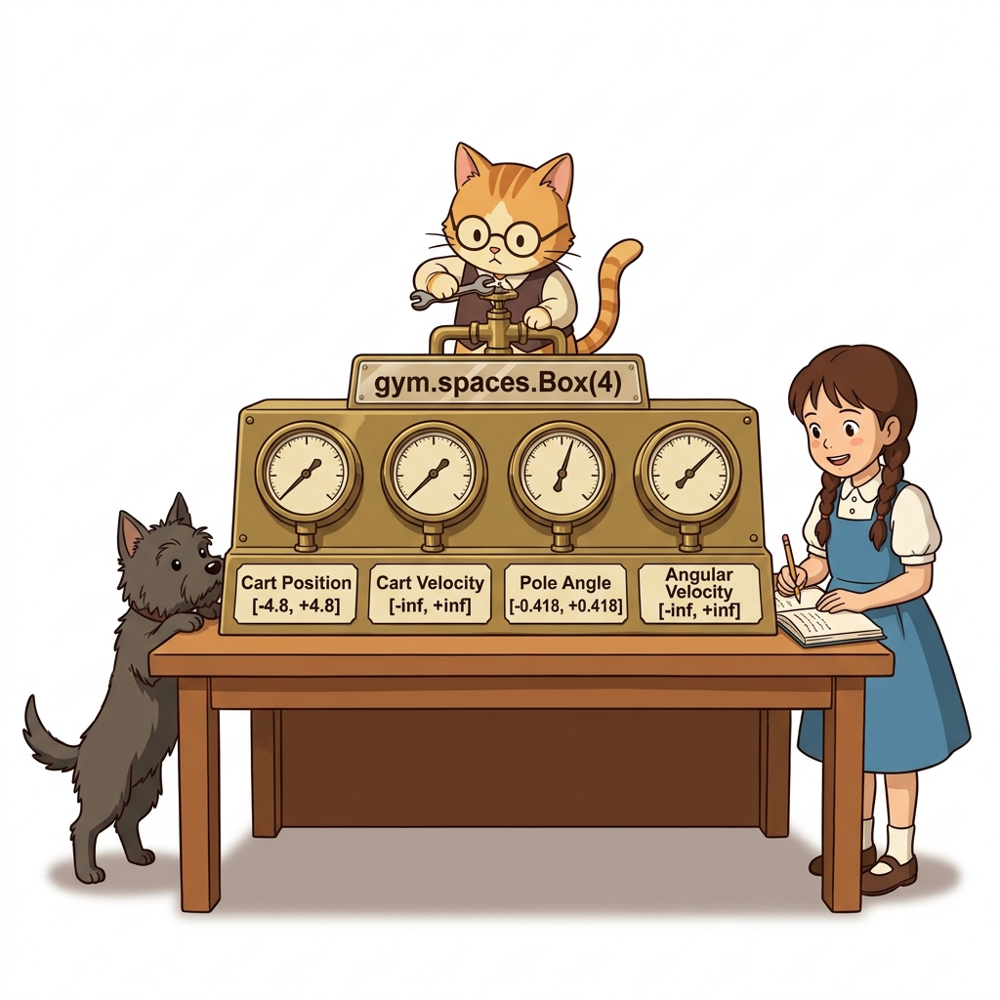
그림 12-1-20-B 카트 위치, 속도, 막대 각도, 각속도의 4대 물리축 상하한 압력 게이지 계측판gym.spaces.Box 클래스는 연속적인 다차원 실수 유클리드 공간을 표현하며, 각 축마다 최솟값(하한)과 최댓값(상한) 경계를 엄밀하게 정의하고 있습니다.
 그림 12-1-20 4개 물리축(위치, 속도, 각도, 각속도)의 하한과 상한 경계 범위를 정밀 계측하는
그림 12-1-20 4개 물리축(위치, 속도, 각도, 각속도)의 하한과 상한 경계 범위를 정밀 계측하는 gym.spaces.Box(shape=(4,)) 4차원 하이퍼큐브 스펙
상태(State): 환경의 완전한 정보와 마르코프 성질
상태(State, $S_t$)는 환경의 내부 메커니즘을 결정짓는 ‘완전한 정보(Complete Information)’를 뜻합니다.
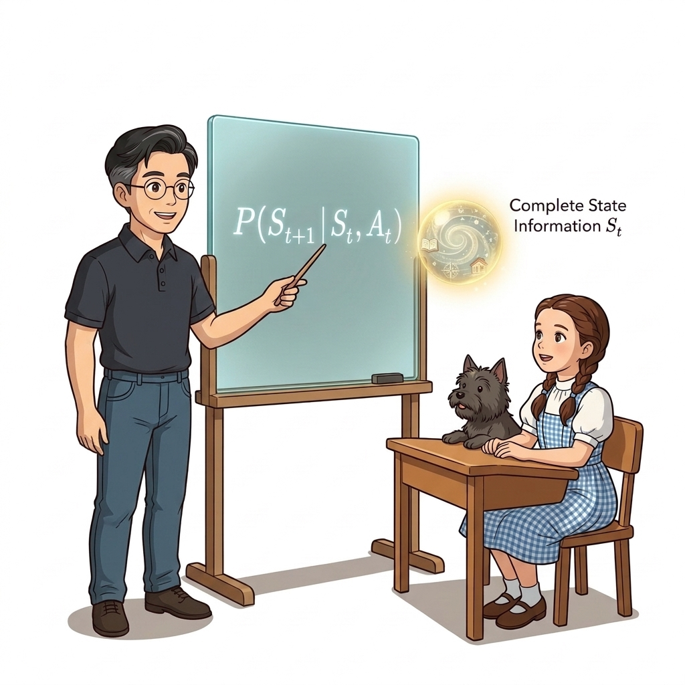
그림 12-1-21-B 마르코프 성질 수식과 과거 이력 없이 현재 상태만으로 미래 확률이 완벽히 결정되는 지식의 구체상태는 과거의 모든 이력 정보를 내포하고 있으므로, 현재 상태 $S_t$와 에이전트의 행동 $A_t$만 주어지면 미래 상태 $S_{t+1}$의 확률 분포가 과거와 완전히 독립적으로 결정되는 마르코프 성질(Markov Property)을 완벽하게 만족합니다:
\[\mathbb{P}(S_{t+1} \mid S_t, A_t, S_{t-1}, A_{t-1}, \dots, S_0, A_0) = \mathbb{P}(S_{t+1} \mid S_t, A_t)\]모든 기물의 위치가 100% 투명하게 드러나 있는 체스판이나 바둑판이 완전 관측 상태의 대표적인 예시입니다.
 그림 12-1-21 모든 기물의 배치가 100% 투명하게 드러나 과거 이력 없이 현재 배치($S_t$)만으로 미래 전이 확률이 완벽히 결정되는 마르코프 결정 과정(MDP)의 체스판
그림 12-1-21 모든 기물의 배치가 100% 투명하게 드러나 과거 이력 없이 현재 배치($S_t$)만으로 미래 전이 확률이 완벽히 결정되는 마르코프 결정 과정(MDP)의 체스판
관찰(Observation): 부분 관측 환경(POMDP)에서의 센서 정보
반면, 관찰(Observation, $O_t$)은 환경의 전체 내부 상태 중 에이전트의 센서나 시야를 통해 포착된 ‘부분적인 정보(Partial Information)’입니다.
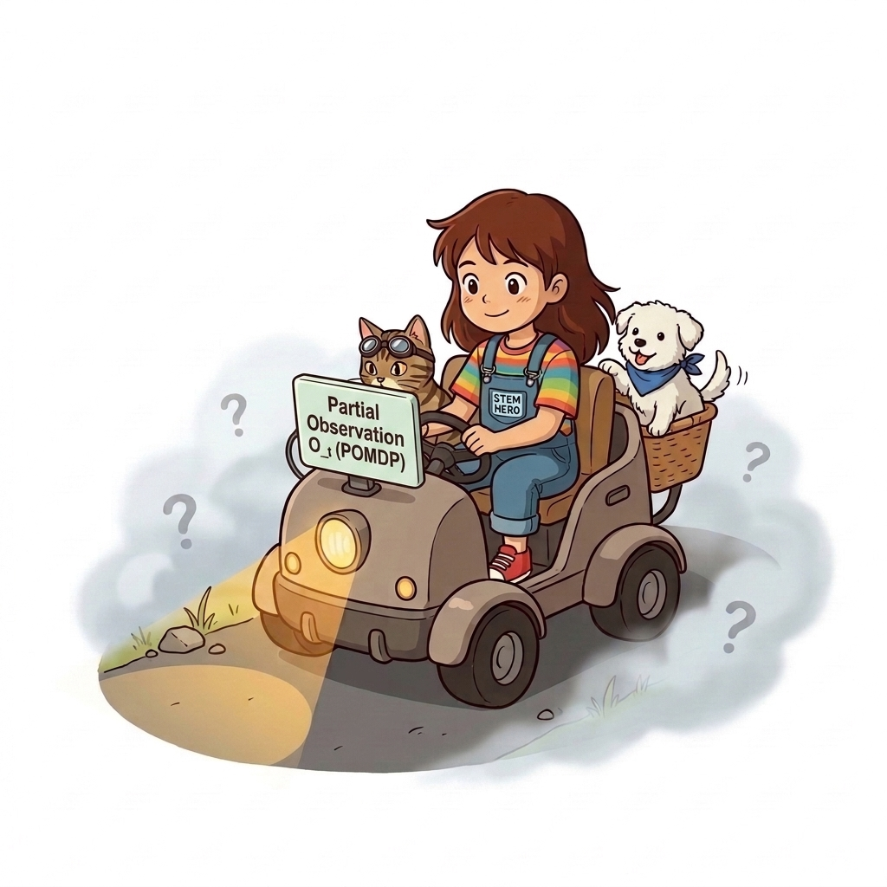
그림 12-1-22-B 안갯속에서 센서에 포착된 국소적 관찰값(Observation)만으로 불확실한 세계를 항해하는 부분 관측(POMDP) 시스템포커나 블랙잭처럼 상대방의 손패와 덱에 남은 카드를 알 수 없는 게임, 또는 안개 낀 도로에서 전방 카메라 한 장에만 의존해 달리는 자율주행 차량처럼, 실세계의 수많은 문제는 부분 관측 마르코프 결정 과정(POMDP, Partially Observable MDP)에 속합니다. 이때 에이전트가 받는 데이터는 상태가 아니라 관찰입니다.
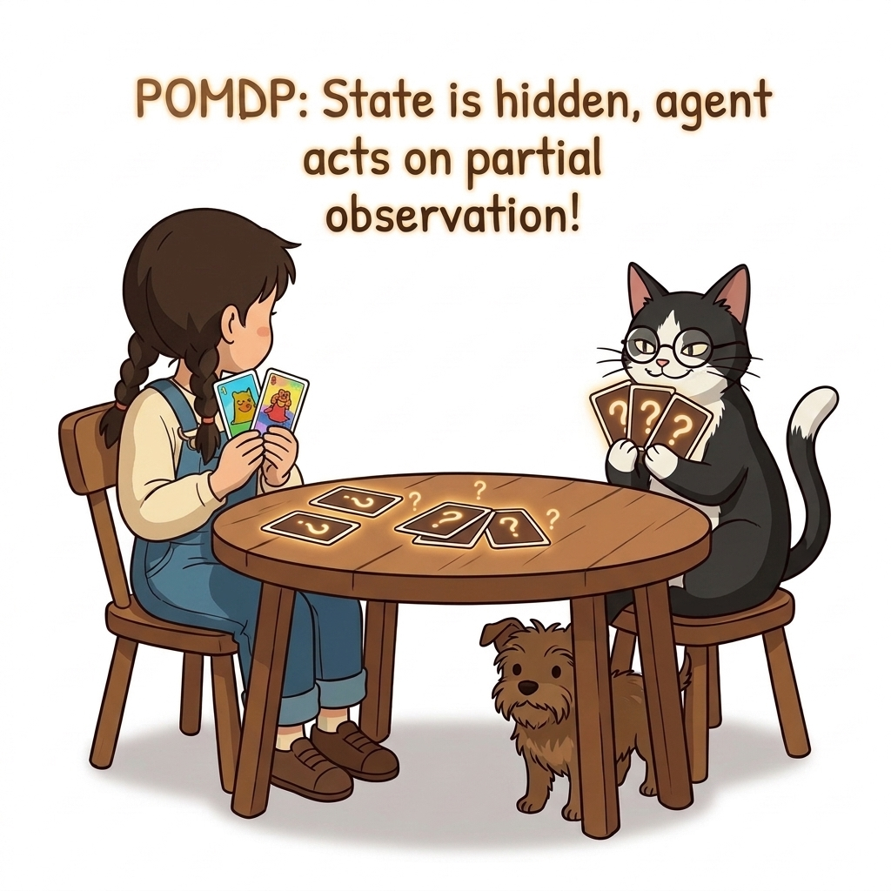
그림 12-1-22 상대방의 패와 덱에 남은 카드가 물음표(?)로 뒤집혀 있어 내 손패(일부 센서 관찰값)만으로 불확실성을 추론해야 하는 부분 관측 환경(POMDP)카트폴 환경에서의 상태-관찰 동일성 ($O_t = S_t$)
OpenAI Gym은 현실의 POMDP 문제까지 포괄할 수 있도록 범용적인 용어인 ‘Observation’을 API 표준으로 채택했습니다.
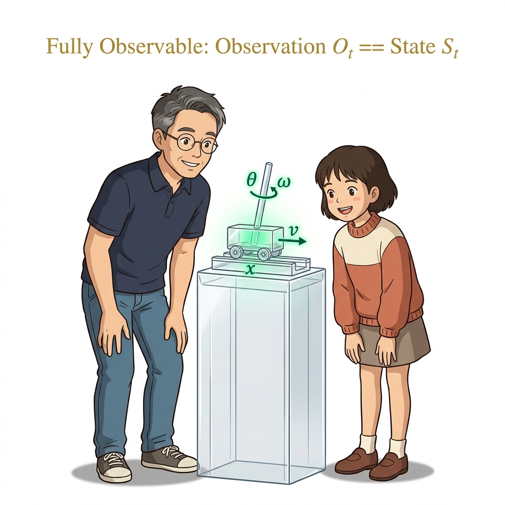
그림 12-1-23-B 카트폴은 모든 물리 변수가 100% 오차 없이 측정되는 완전 관측 환경이므로 관찰과 상태가 일치함을 확인하는 크리스탈 모형하지만 우리가 다루는 카트폴(CartPole) 환경은 카트의 위치, 속도, 막대의 각도, 각속도라는 동역학계의 모든 자유도 변수가 센서 오차 없이 에이전트에게 100% 고스란히 전달되는 완전 관측 환경(Fully Observable Environment)입니다. 즉, 관찰과 상태가 완전히 일치합니다:
\[O_t \equiv S_t\]따라서 본 강의 교재 전반에서는 설명의 직관성과 통일성을 위해 두 용어를 동의어로 취급하고 친숙한 ‘상태(State)’라는 용어를 중심으로 전개해 나갑니다.
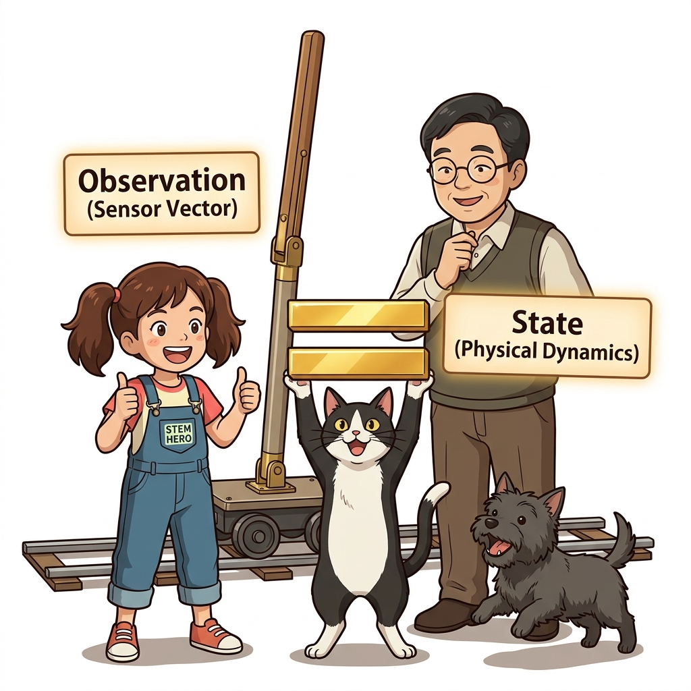
그림 12-1-23 카트폴은 역학 시뮬레이션의 모든 변수가 측정되는 완전 관측 환경이므로 관찰과 상태가 일치(Observation = State)함을 확인하고 본격적인 DQN 탐험으로 나아가는 도로시와 지니